Calculus II — Advanced accumulation
Integration methods, sequences and series. This guide contains 91 chapter-level worked lessons, review questions, answers, and linked illustrations.
Contents — select a chapter
Integration by substitution
Set u=g(x) and du=g′(x)dx to simplify a composite integrand.
∫ 2x(x²+1)^3 dx = (x²+1)^4/4 + C.
- u=x²+1
- du=2x dx
- ∫u³ du=u⁴/4+C.
Evaluate integral 2x from 0 to 3.
Hint: Substitute u=x², then evaluate.
Show answer and verify
9
Check the units, inputs and intermediate steps. Different solution methods may be valid.
Integration by parts
∫u dv=uv−∫v du; choose u to simplify when differentiated.
∫x e^x dx=xe^x−e^x+C.
- Choose u=x,dv=e^x dx
- du=dx,v=e^x
- Apply parts.
Evaluate integral x from 0 to 4.
Hint: x²/2 evaluated at four.
Show answer and verify
8
Check the units, inputs and intermediate steps. Different solution methods may be valid.
Trigonometric integrals
Use identities such as sin²x=(1−cos 2x)/2 to integrate powers.
∫sin²x dx=x/2−sin 2x/4+C.
- Replace sin² with half-angle identity
- Integrate termwise.
Integral sin(x) from 0 to pi (RAD)
Hint: Antiderivative −cos x.
Show answer and verify
2
Check the units, inputs and intermediate steps. Different solution methods may be valid.
Partial fractions
A rational function can sometimes be decomposed into simpler fractions.
1/[x(x+1)]=1/x−1/(x+1).
- Set A/x+B/(x+1)
- Solve A=1,B=−1
- Integrate logarithms.
Integral 1/(x+1) from 0 to 1
Hint: Antiderivative ln|x+1|.
Show answer and verify
0.6931471805599453
Check the units, inputs and intermediate steps. Different solution methods may be valid.
Improper integrals
Infinite bounds or singularities require limits; some integrals diverge.
∫₁∞1/x² dx = lim b→∞(1−1/b)=1.
- Integrate x^−2
- Evaluate 1 to b
- Take b→∞.
Value of ∫₁∞ 2/x³ dx?
Hint: Antiderivative −1/x².
Show answer and verify
1
Check the units, inputs and intermediate steps. Different solution methods may be valid.
Sequences and convergence
A sequence converges if terms approach a finite value.
a_n=1/n tends to 0 as n→∞.
- Denominator grows without bound
- Ratio approaches zero.
What is lim n→∞ 7/n?
Hint: Numerator fixed, denominator grows.
Show answer and verify
0
Check the units, inputs and intermediate steps. Different solution methods may be valid.
Geometric series
Infinite geometric series ∑ ar^n converges to a/(1−r) if |r|<1.
1+1/2+1/4+...=2.
- a=1,r=1/2
- 1/(1−1/2)=2.
Sum 3+1.5+0.75+...
Hint: Geometric sum with a=3,r=1/2.
Show answer and verify
6
Check the units, inputs and intermediate steps. Different solution methods may be valid.
Ratio test
If L=lim|a_(n+1)/a_n|<1, the series converges absolutely; if L>1 it diverges.
∑1/n! converges: ratio=1/(n+1)→0.
- Write successive-term ratio
- Take limit
- Compare with one.
Ratio-test limit L=0.4: enter 1 for converges, 0 for diverges.
Hint: Limit below one means absolute convergence.
Show answer and verify
1
Check the units, inputs and intermediate steps. Different solution methods may be valid.
Power series
A power series ∑c_n(x−a)^n converges in an interval around its center.
∑x^n converges for |x|<1.
- Treat as geometric r=x
- Require |r|<1.
For ∑(x/3)^n, what is radius of convergence?
Hint: Require |x/3|<1.
Show answer and verify
3
Check the units, inputs and intermediate steps. Different solution methods may be valid.
Taylor and Maclaurin polynomials
Approximate a smooth function using derivatives at a center: ∑f^(n)(a)(x−a)^n/n!.
e^x≈1+x+x²/2 near zero.
- f^(n)(0)=1 for all n
- Assemble terms.
Use 1+x+x²/2 to approximate e^1.
Hint: Substitute x=1.
Show answer and verify
2.5
Check the units, inputs and intermediate steps. Different solution methods may be valid.
Parametric curves
x(t),y(t) define a path; dy/dx=(dy/dt)/(dx/dt) if dx/dt≠0.
x=t²,y=t³ => dy/dx=3t/2 for t≠0.
- Compute 2t and 3t²
- Divide to get 3t/2.
At t=2 for x=t²,y=t³, find dy/dx.
Hint: 3t²/(2t) simplifies 3t/2.
Show answer and verify
3
Check the units, inputs and intermediate steps. Different solution methods may be valid.
Polar area
Area enclosed by polar curve r(θ) is 1/2∫r(θ)² dθ over a suitable interval.
Circle r=2 from 0 to 2π has area 4π.
- Square radius: r²=4
- Integrate one-half times 4 over angle 0 to 2π
- Area is 4π.
For circle r=3, what is area divided by π?
Hint: Area is πr².
Show answer and verify
9
Check the units, inputs and intermediate steps. Different solution methods may be valid.
Arc length
For y=f(x), length on [a,b] is ∫√(1+[f′(x)]²) dx.
Straight line y=3x from x=0 to 1 has length √10.
- Derivative 3
- Integrand √(1+9)=√10
- Integrate over length 1.
Arc length of y=4x from x=0 to 3?
Hint: Length=3×sqrt(17).
Show answer and verify
12.36931687685298
Check the units, inputs and intermediate steps. Different solution methods may be valid.
Volumes by disks and washers
Rotating y=f(x) about x-axis yields V=π∫[f(x)]²dx for nonnegative f.
Rotate y=x, 0≤x≤2: V=8π/3.
- Square x
- Integrate x² from 0 to2
- Multiply π.
Rotate y=2 from x=0 to 3. What is volume divided by pi?
Hint: Cylinder radius two, length three.
Show answer and verify
12
Check the units, inputs and intermediate steps. Different solution methods may be valid.
Integration by substitution
Integration by substitution: The definite integral represents signed accumulated change and can be approximated by Riemann sums. Differentiate an antiderivative to verify an indefinite-integral result.
Integrate 3x on [0,5].
- Antiderivative is (3/2)x².
- At 5, evaluate 3×5²/2.
- The value is 37.500000.
Integrate 10x from 0 to 5.
Hint: Use ∫kx dx = kx²/2 and evaluate bounds.
Show answer and verify
125.0
Check the units, inputs and intermediate steps. Different solution methods may be valid.
Integration by parts
Integration by parts: The definite integral represents signed accumulated change and can be approximated by Riemann sums. Differentiate an antiderivative to verify an indefinite-integral result.
Integrate 3x on [0,5].
- Antiderivative is (3/2)x².
- At 5, evaluate 3×5²/2.
- The value is 37.500000.
Integrate 10x from 0 to 5.
Hint: Use ∫kx dx = kx²/2 and evaluate bounds.
Show answer and verify
125.0
Check the units, inputs and intermediate steps. Different solution methods may be valid.
Tabular integration by parts
Tabular integration by parts: The definite integral represents signed accumulated change and can be approximated by Riemann sums. Differentiate an antiderivative to verify an indefinite-integral result.
Integrate 4x on [0,4].
- Antiderivative is (4/2)x².
- At 4, evaluate 4×4²/2.
- The value is 32.000000.
Integrate 2x from 0 to 4.
Hint: Use ∫kx dx = kx²/2 and evaluate bounds.
Show answer and verify
16.0
Check the units, inputs and intermediate steps. Different solution methods may be valid.
Trigonometric integrals
Trigonometric integrals: The definite integral represents signed accumulated change and can be approximated by Riemann sums. Differentiate an antiderivative to verify an indefinite-integral result.
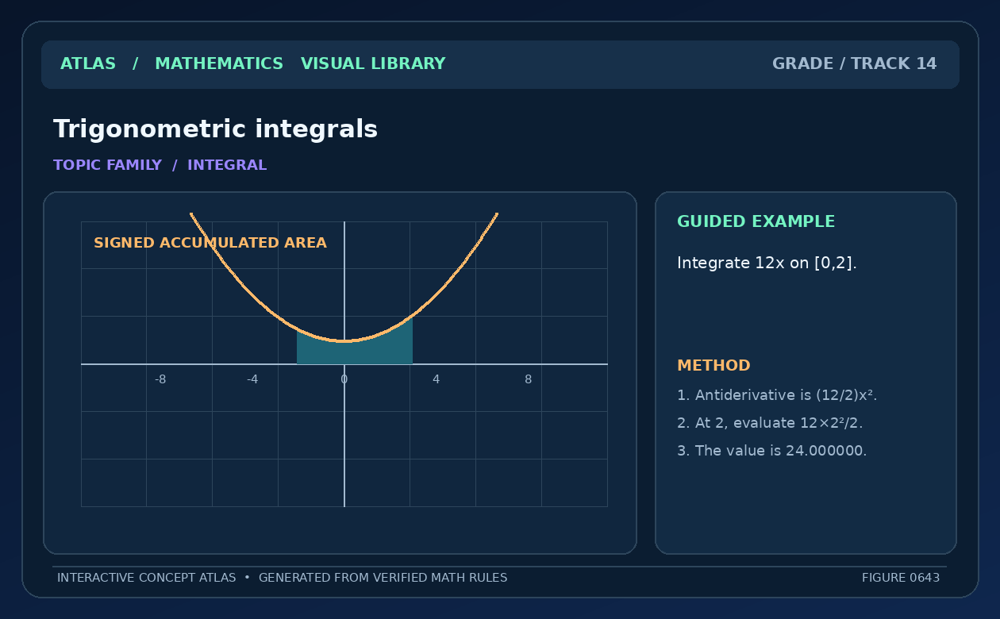
Integrate 12x on [0,2].
- Antiderivative is (12/2)x².
- At 2, evaluate 12×2²/2.
- The value is 24.000000.
Integrate 7x from 0 to 2.
Hint: Use ∫kx dx = kx²/2 and evaluate bounds.
Show answer and verify
14.0
Check the units, inputs and intermediate steps. Different solution methods may be valid.
Trigonometric substitution
Trigonometric substitution: The definite integral represents signed accumulated change and can be approximated by Riemann sums. Differentiate an antiderivative to verify an indefinite-integral result.
Integrate 9x on [0,3].
- Antiderivative is (9/2)x².
- At 3, evaluate 9×3²/2.
- The value is 40.500000.
Integrate 9x from 0 to 3.
Hint: Use ∫kx dx = kx²/2 and evaluate bounds.
Show answer and verify
40.5
Check the units, inputs and intermediate steps. Different solution methods may be valid.
Partial fraction decomposition
Partial fraction decomposition: The definite integral represents signed accumulated change and can be approximated by Riemann sums. Differentiate an antiderivative to verify an indefinite-integral result.
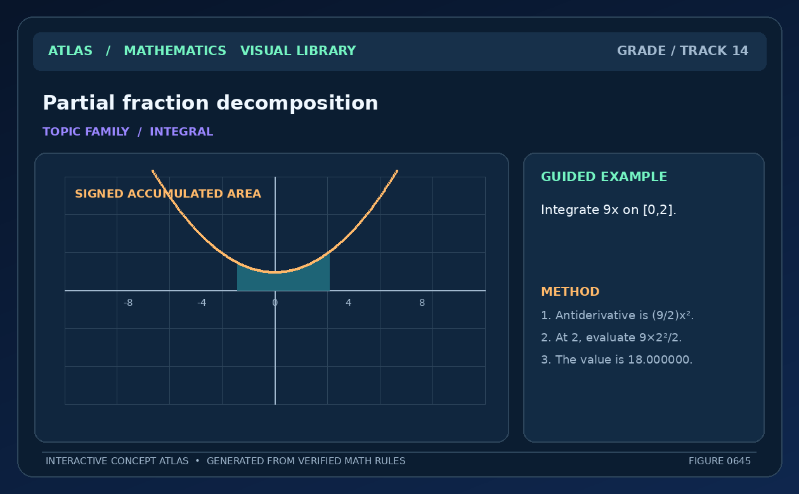
Integrate 9x on [0,2].
- Antiderivative is (9/2)x².
- At 2, evaluate 9×2²/2.
- The value is 18.000000.
Integrate 4x from 0 to 2.
Hint: Use ∫kx dx = kx²/2 and evaluate bounds.
Show answer and verify
8.0
Check the units, inputs and intermediate steps. Different solution methods may be valid.
Rational function integration
Rational function integration: The definite integral represents signed accumulated change and can be approximated by Riemann sums. Differentiate an antiderivative to verify an indefinite-integral result.
Integrate 9x on [0,7].
- Antiderivative is (9/2)x².
- At 7, evaluate 9×7²/2.
- The value is 220.500000.
Integrate 4x from 0 to 7.
Hint: Use ∫kx dx = kx²/2 and evaluate bounds.
Show answer and verify
98.0
Check the units, inputs and intermediate steps. Different solution methods may be valid.
Completing the square for integrals
Completing the square for integrals: The definite integral represents signed accumulated change and can be approximated by Riemann sums. Differentiate an antiderivative to verify an indefinite-integral result.
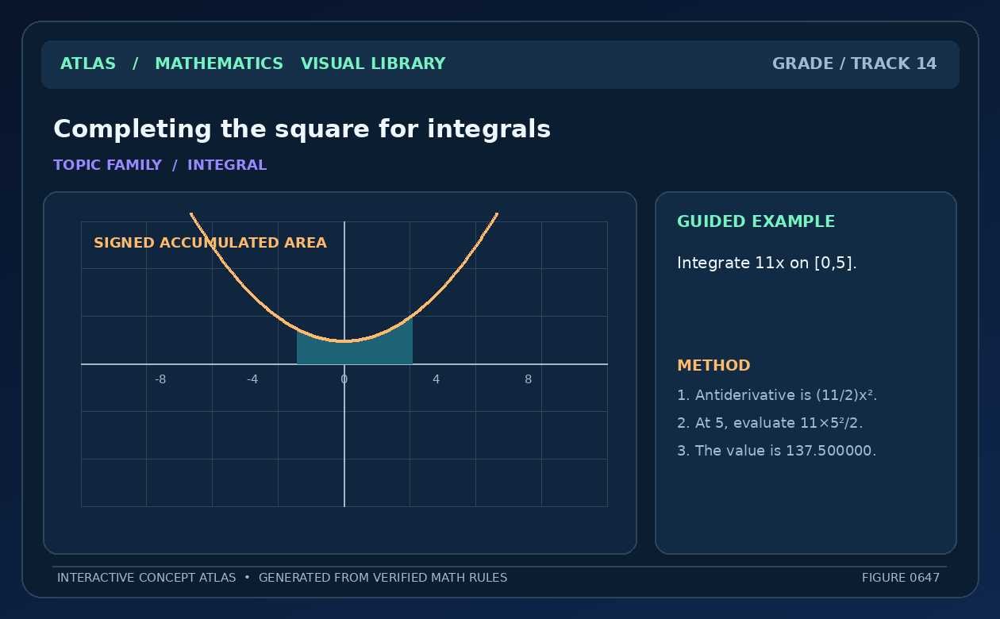
Integrate 11x on [0,5].
- Antiderivative is (11/2)x².
- At 5, evaluate 11×5²/2.
- The value is 137.500000.
Integrate 5x from 0 to 5.
Hint: Use ∫kx dx = kx²/2 and evaluate bounds.
Show answer and verify
62.5
Check the units, inputs and intermediate steps. Different solution methods may be valid.
Reduction formulas
Reduction formulas: The definite integral represents signed accumulated change and can be approximated by Riemann sums. Differentiate an antiderivative to verify an indefinite-integral result.
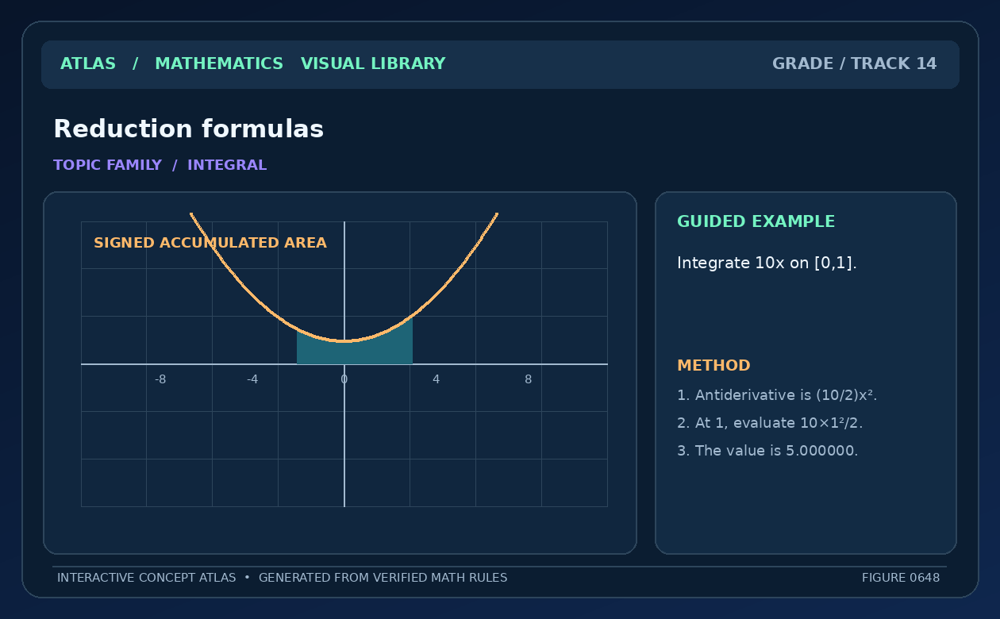
Integrate 10x on [0,1].
- Antiderivative is (10/2)x².
- At 1, evaluate 10×1²/2.
- The value is 5.000000.
Integrate 4x from 0 to 1.
Hint: Use ∫kx dx = kx²/2 and evaluate bounds.
Show answer and verify
2.0
Check the units, inputs and intermediate steps. Different solution methods may be valid.
Numerical integration errors
Numerical integration errors: The definite integral represents signed accumulated change and can be approximated by Riemann sums. Differentiate an antiderivative to verify an indefinite-integral result.
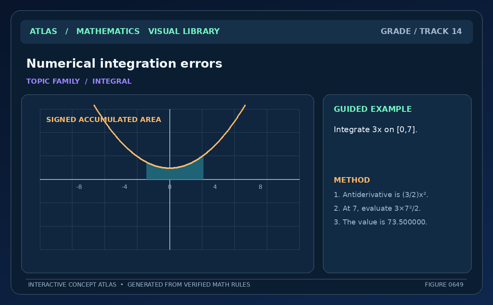
Integrate 3x on [0,7].
- Antiderivative is (3/2)x².
- At 7, evaluate 3×7²/2.
- The value is 73.500000.
Integrate 10x from 0 to 7.
Hint: Use ∫kx dx = kx²/2 and evaluate bounds.
Show answer and verify
245.0
Check the units, inputs and intermediate steps. Different solution methods may be valid.
Midpoint quadrature
Midpoint quadrature: The definite integral represents signed accumulated change and can be approximated by Riemann sums. Differentiate an antiderivative to verify an indefinite-integral result.
Integrate 9x on [0,2].
- Antiderivative is (9/2)x².
- At 2, evaluate 9×2²/2.
- The value is 18.000000.
Integrate 10x from 0 to 2.
Hint: Use ∫kx dx = kx²/2 and evaluate bounds.
Show answer and verify
20.0
Check the units, inputs and intermediate steps. Different solution methods may be valid.
Trapezoidal quadrature
Trapezoidal quadrature: The definite integral represents signed accumulated change and can be approximated by Riemann sums. Differentiate an antiderivative to verify an indefinite-integral result.
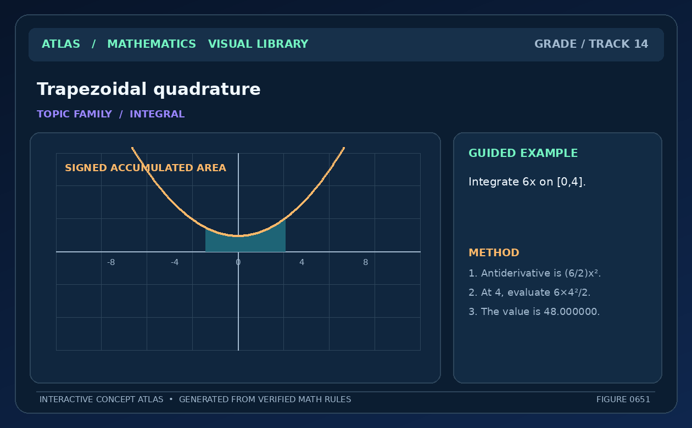
Integrate 6x on [0,4].
- Antiderivative is (6/2)x².
- At 4, evaluate 6×4²/2.
- The value is 48.000000.
Integrate 10x from 0 to 4.
Hint: Use ∫kx dx = kx²/2 and evaluate bounds.
Show answer and verify
80.0
Check the units, inputs and intermediate steps. Different solution methods may be valid.
Simpson integration
Simpson integration: The definite integral represents signed accumulated change and can be approximated by Riemann sums. Differentiate an antiderivative to verify an indefinite-integral result.
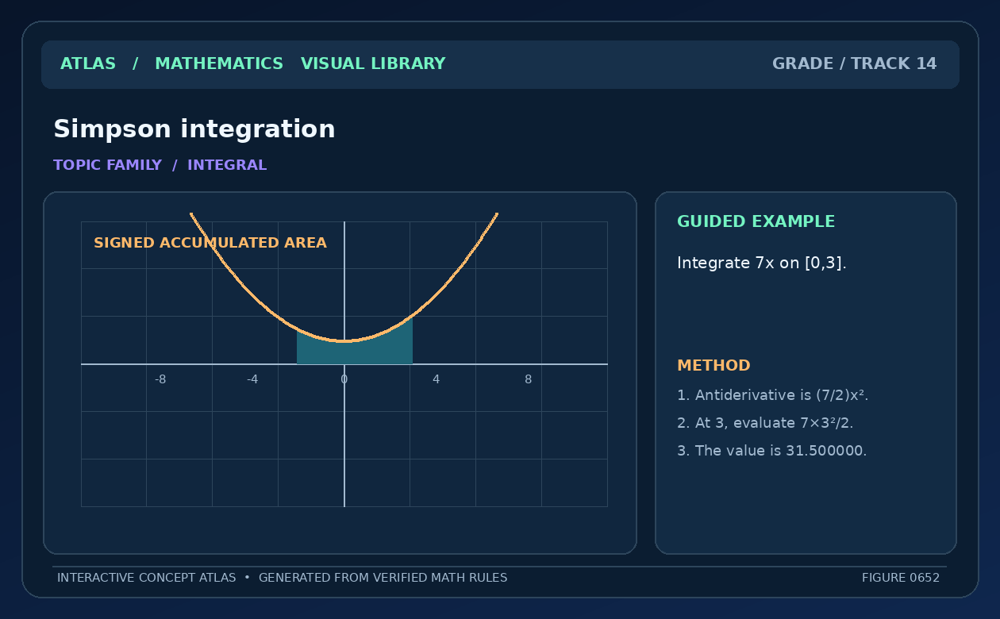
Integrate 7x on [0,3].
- Antiderivative is (7/2)x².
- At 3, evaluate 7×3²/2.
- The value is 31.500000.
Integrate 9x from 0 to 3.
Hint: Use ∫kx dx = kx²/2 and evaluate bounds.
Show answer and verify
40.5
Check the units, inputs and intermediate steps. Different solution methods may be valid.
Integration of logarithms
Integration of logarithms: The definite integral represents signed accumulated change and can be approximated by Riemann sums. Differentiate an antiderivative to verify an indefinite-integral result.
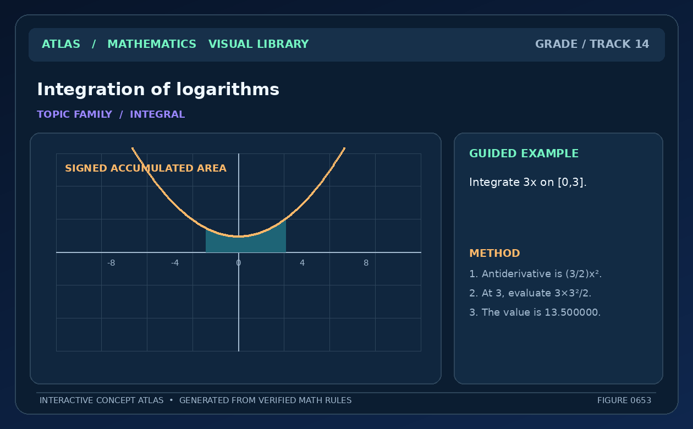
Integrate 3x on [0,3].
- Antiderivative is (3/2)x².
- At 3, evaluate 3×3²/2.
- The value is 13.500000.
Integrate 5x from 0 to 3.
Hint: Use ∫kx dx = kx²/2 and evaluate bounds.
Show answer and verify
22.5
Check the units, inputs and intermediate steps. Different solution methods may be valid.
Improper integrals with infinite bounds
Improper integrals with infinite bounds: The definite integral represents signed accumulated change and can be approximated by Riemann sums. Differentiate an antiderivative to verify an indefinite-integral result.
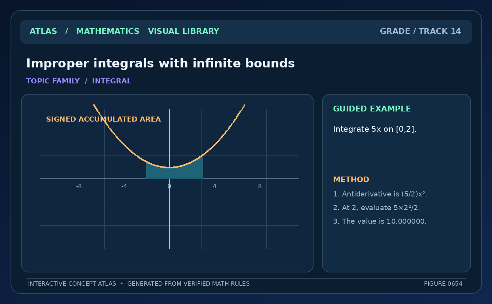
Integrate 5x on [0,2].
- Antiderivative is (5/2)x².
- At 2, evaluate 5×2²/2.
- The value is 10.000000.
Integrate 4x from 0 to 2.
Hint: Use ∫kx dx = kx²/2 and evaluate bounds.
Show answer and verify
8.0
Check the units, inputs and intermediate steps. Different solution methods may be valid.
Improper integrals with singularities
Improper integrals with singularities: The definite integral represents signed accumulated change and can be approximated by Riemann sums. Differentiate an antiderivative to verify an indefinite-integral result.
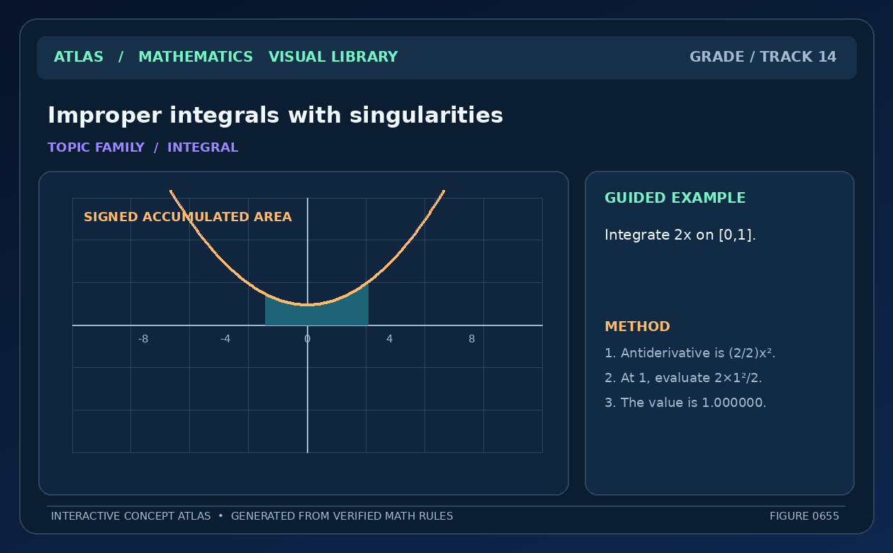
Integrate 2x on [0,1].
- Antiderivative is (2/2)x².
- At 1, evaluate 2×1²/2.
- The value is 1.000000.
Integrate 6x from 0 to 1.
Hint: Use ∫kx dx = kx²/2 and evaluate bounds.
Show answer and verify
3.0
Check the units, inputs and intermediate steps. Different solution methods may be valid.
Comparison for improper integrals
Comparison for improper integrals: The definite integral represents signed accumulated change and can be approximated by Riemann sums. Differentiate an antiderivative to verify an indefinite-integral result.
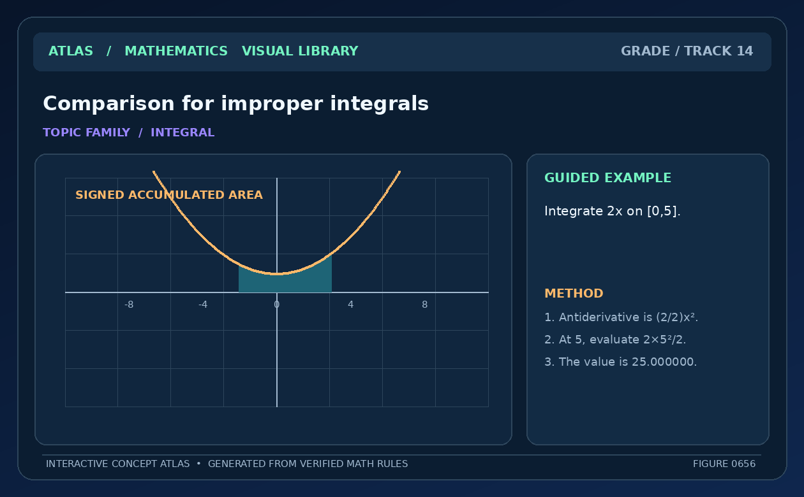
Integrate 2x on [0,5].
- Antiderivative is (2/2)x².
- At 5, evaluate 2×5²/2.
- The value is 25.000000.
Integrate 11x from 0 to 5.
Hint: Use ∫kx dx = kx²/2 and evaluate bounds.
Show answer and verify
137.5
Check the units, inputs and intermediate steps. Different solution methods may be valid.
Volumes by slicing
Volumes by slicing: Multiply base area by height for a prism; other solids require appropriate formulas. Cubic units measure volume, not square units.
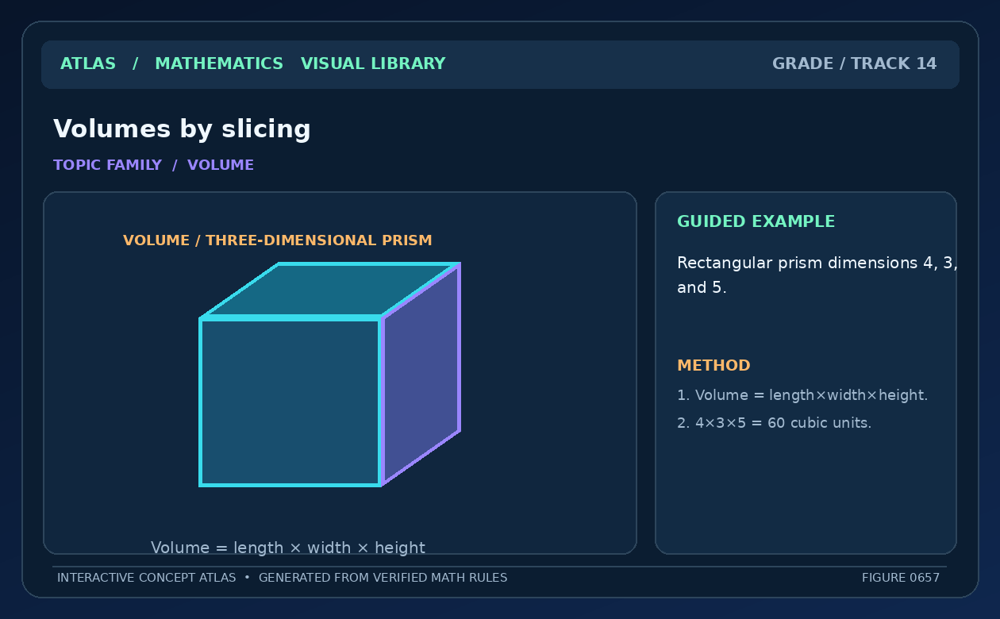
Rectangular prism dimensions 4, 3, and 5.
- Volume = length×width×height.
- 4×3×5 = 60 cubic units.
Volume of a prism 5 by 3 by 5?
Hint: Multiply all three dimensions.
Show answer and verify
75
Check the units, inputs and intermediate steps. Different solution methods may be valid.
Solids of revolution with disks
Solids of revolution with disks: Multiply base area by height for a prism; other solids require appropriate formulas. Cubic units measure volume, not square units.
Rectangular prism dimensions 2, 3, and 2.
- Volume = length×width×height.
- 2×3×2 = 12 cubic units.
Volume of a prism 3 by 3 by 2?
Hint: Multiply all three dimensions.
Show answer and verify
18
Check the units, inputs and intermediate steps. Different solution methods may be valid.
Solids of revolution with washers
Solids of revolution with washers: Multiply base area by height for a prism; other solids require appropriate formulas. Cubic units measure volume, not square units.
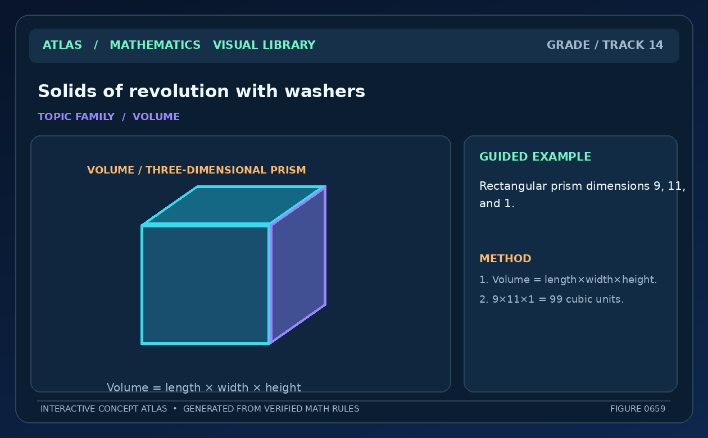
Rectangular prism dimensions 9, 11, and 1.
- Volume = length×width×height.
- 9×11×1 = 99 cubic units.
Volume of a prism 10 by 11 by 1?
Hint: Multiply all three dimensions.
Show answer and verify
110
Check the units, inputs and intermediate steps. Different solution methods may be valid.
Shell method
Shell method: Multiply base area by height for a prism; other solids require appropriate formulas. Cubic units measure volume, not square units.
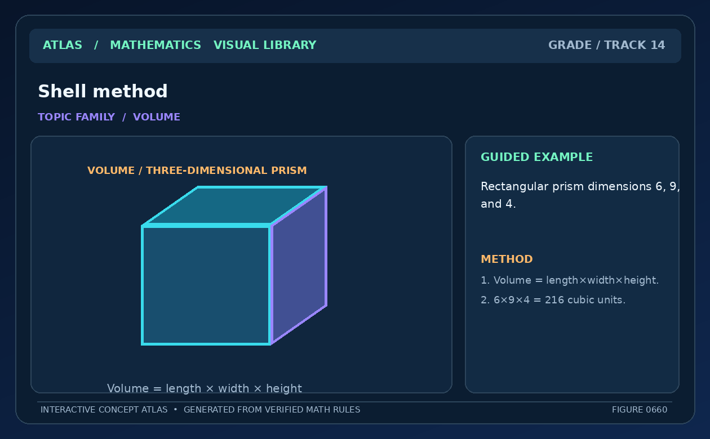
Rectangular prism dimensions 6, 9, and 4.
- Volume = length×width×height.
- 6×9×4 = 216 cubic units.
Volume of a prism 7 by 9 by 4?
Hint: Multiply all three dimensions.
Show answer and verify
252
Check the units, inputs and intermediate steps. Different solution methods may be valid.
Cross-sectional volume models
Cross-sectional volume models: Multiply base area by height for a prism; other solids require appropriate formulas. Cubic units measure volume, not square units.
Rectangular prism dimensions 6, 8, and 3.
- Volume = length×width×height.
- 6×8×3 = 144 cubic units.
Volume of a prism 7 by 8 by 3?
Hint: Multiply all three dimensions.
Show answer and verify
168
Check the units, inputs and intermediate steps. Different solution methods may be valid.
Work with variable forces
Work with variable forces: Formulate the model, take its derivative, and interpret its units and critical points. A critical point may be a maximum, minimum, or neither.
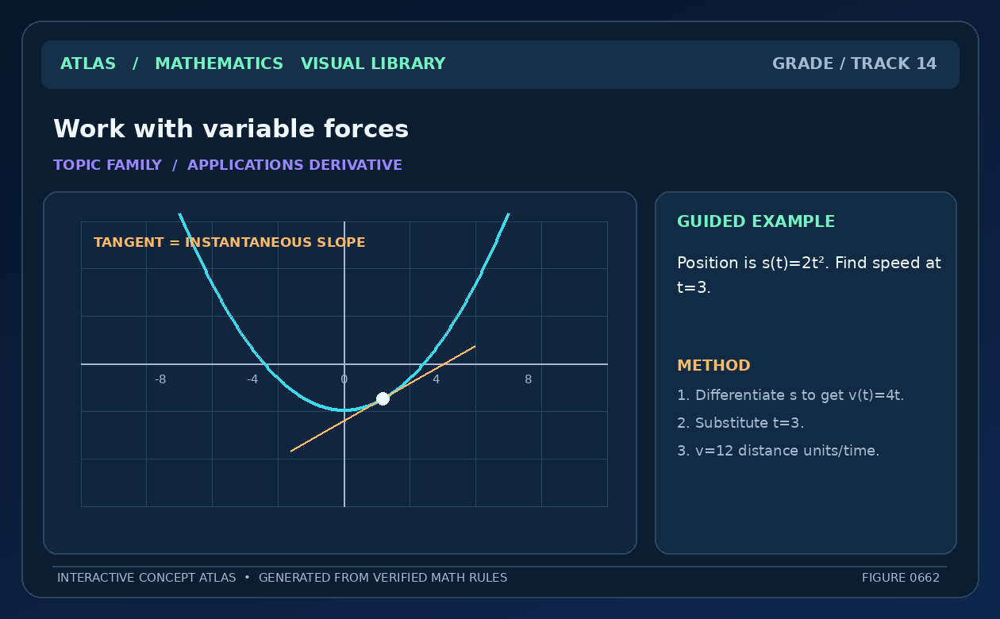
Position is s(t)=2t². Find speed at t=3.
- Differentiate s to get v(t)=4t.
- Substitute t=3.
- v=12 distance units/time.
For s(t)=8t², find velocity at t=3.
Hint: Velocity is the first derivative of position.
Show answer and verify
48
Check the units, inputs and intermediate steps. Different solution methods may be valid.
Fluid force and pressure
Fluid force and pressure: Formulate the model, take its derivative, and interpret its units and critical points. A critical point may be a maximum, minimum, or neither.
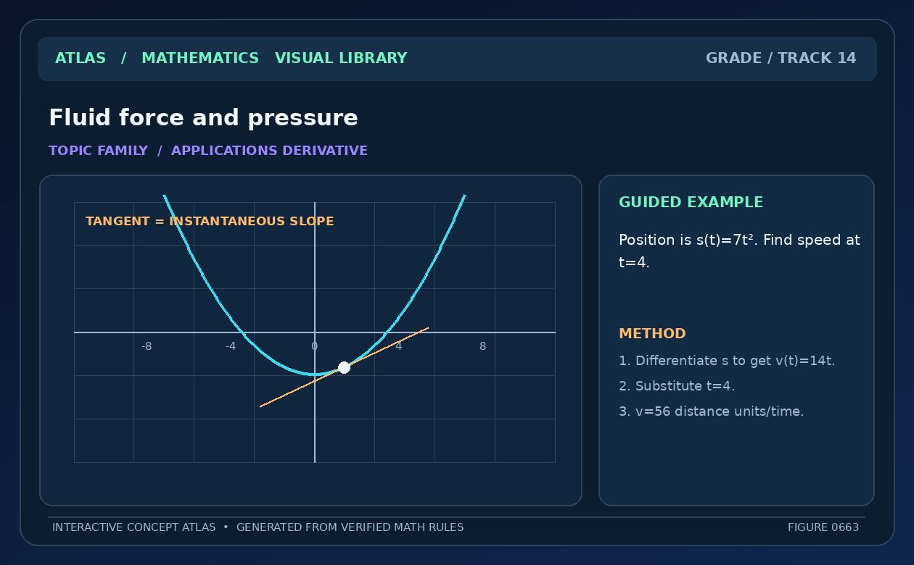
Position is s(t)=7t². Find speed at t=4.
- Differentiate s to get v(t)=14t.
- Substitute t=4.
- v=56 distance units/time.
For s(t)=2t², find velocity at t=4.
Hint: Velocity is the first derivative of position.
Show answer and verify
16
Check the units, inputs and intermediate steps. Different solution methods may be valid.
Center of mass
Center of mass: Formulate the model, take its derivative, and interpret its units and critical points. A critical point may be a maximum, minimum, or neither.
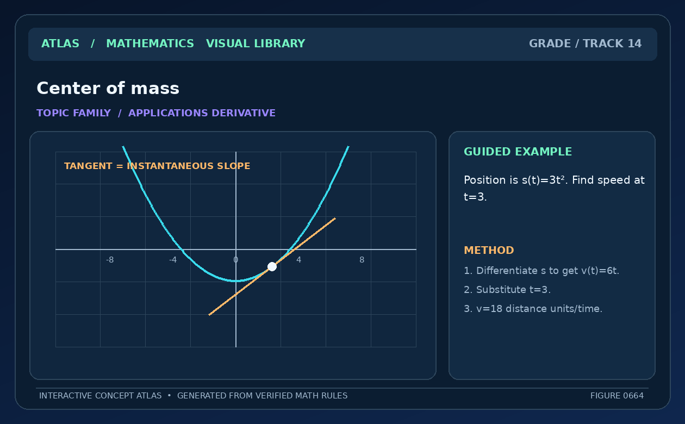
Position is s(t)=3t². Find speed at t=3.
- Differentiate s to get v(t)=6t.
- Substitute t=3.
- v=18 distance units/time.
For s(t)=9t², find velocity at t=3.
Hint: Velocity is the first derivative of position.
Show answer and verify
54
Check the units, inputs and intermediate steps. Different solution methods may be valid.
Moments of mass
Moments of mass: Formulate the model, take its derivative, and interpret its units and critical points. A critical point may be a maximum, minimum, or neither.
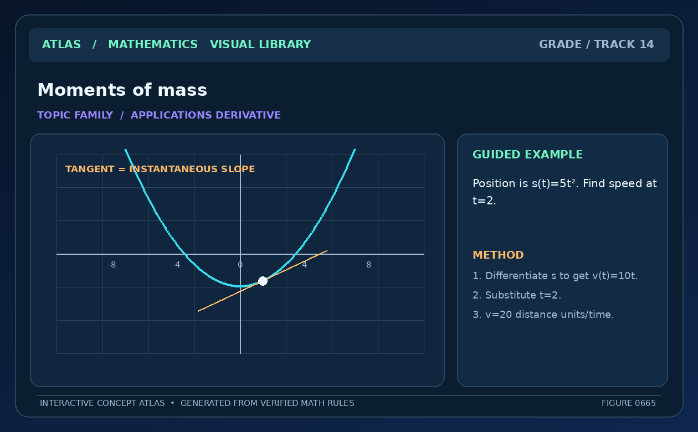
Position is s(t)=5t². Find speed at t=2.
- Differentiate s to get v(t)=10t.
- Substitute t=2.
- v=20 distance units/time.
For s(t)=2t², find velocity at t=2.
Hint: Velocity is the first derivative of position.
Show answer and verify
8
Check the units, inputs and intermediate steps. Different solution methods may be valid.
Average values in applications
Average values in applications: Formulate the model, take its derivative, and interpret its units and critical points. A critical point may be a maximum, minimum, or neither.
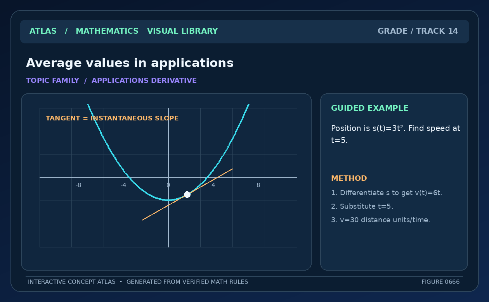
Position is s(t)=3t². Find speed at t=5.
- Differentiate s to get v(t)=6t.
- Substitute t=5.
- v=30 distance units/time.
For s(t)=11t², find velocity at t=5.
Hint: Velocity is the first derivative of position.
Show answer and verify
110
Check the units, inputs and intermediate steps. Different solution methods may be valid.
Arc length of graphs
Arc length of graphs: Break a curve into small line segments and take their limiting total length. Arc-length integrands involve the square root of one plus slope squared.
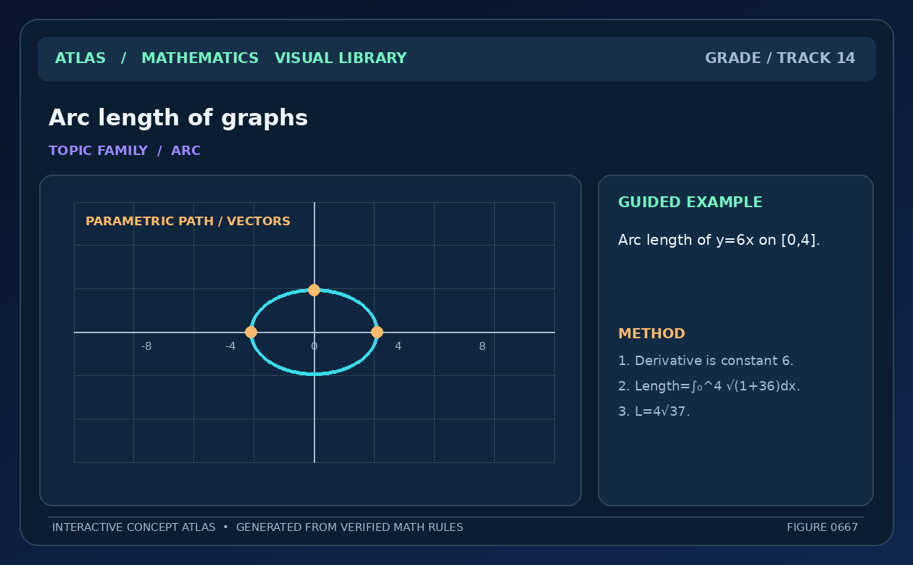
Arc length of y=6x on [0,4].
- Derivative is constant 6.
- Length=∫₀^4 √(1+36)dx.
- L=4√37.
Length of y=5x on [0,4]?
Hint: Length of straight segment is width × sqrt(1+slope²).
Show answer and verify
20.396078054371138
Check the units, inputs and intermediate steps. Different solution methods may be valid.
Surface area of revolution
Surface area of revolution: Break a curve into small line segments and take their limiting total length. Arc-length integrands involve the square root of one plus slope squared.
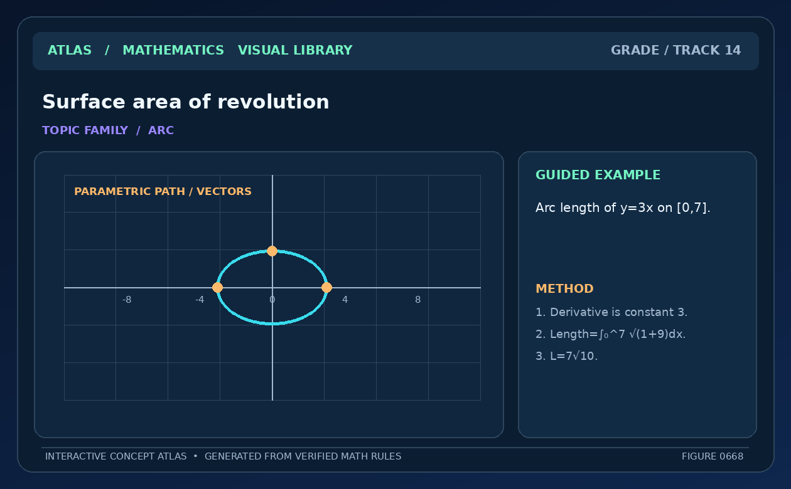
Arc length of y=3x on [0,7].
- Derivative is constant 3.
- Length=∫₀^7 √(1+9)dx.
- L=7√10.
Length of y=5x on [0,7]?
Hint: Length of straight segment is width × sqrt(1+slope²).
Show answer and verify
35.69313659514949
Check the units, inputs and intermediate steps. Different solution methods may be valid.
Arc length for parametric curves
Arc length for parametric curves: Break a curve into small line segments and take their limiting total length. Arc-length integrands involve the square root of one plus slope squared.
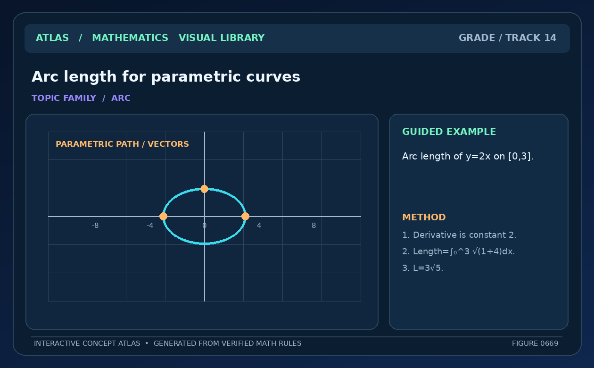
Arc length of y=2x on [0,3].
- Derivative is constant 2.
- Length=∫₀^3 √(1+4)dx.
- L=3√5.
Length of y=2x on [0,3]?
Hint: Length of straight segment is width × sqrt(1+slope²).
Show answer and verify
6.708203932499369
Check the units, inputs and intermediate steps. Different solution methods may be valid.
Arc length in polar form
Arc length in polar form: Break a curve into small line segments and take their limiting total length. Arc-length integrands involve the square root of one plus slope squared.
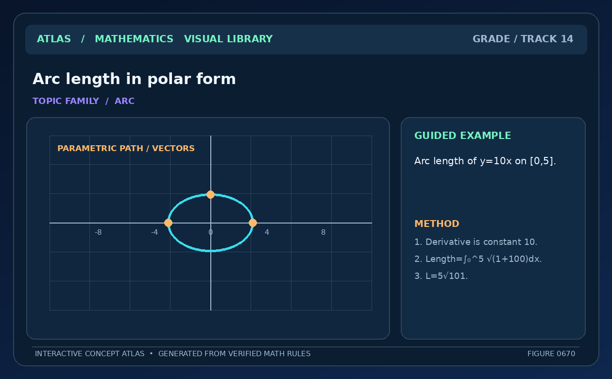
Arc length of y=10x on [0,5].
- Derivative is constant 10.
- Length=∫₀^5 √(1+100)dx.
- L=5√101.
Length of y=6x on [0,5]?
Hint: Length of straight segment is width × sqrt(1+slope²).
Show answer and verify
30.413812651491096
Check the units, inputs and intermediate steps. Different solution methods may be valid.
Sequence convergence
Sequence convergence: Express the nth term through a pattern or recurrence, then verify initial terms. An arithmetic sequence adds a constant difference at each step.
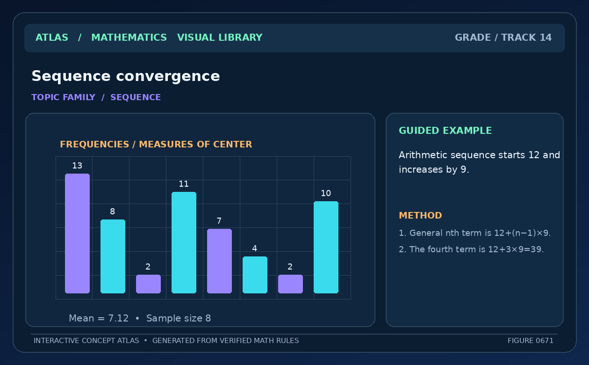
Arithmetic sequence starts 12 and increases by 9.
- General nth term is 12+(n−1)×9.
- The fourth term is 12+3×9=39.
Find the fifth term of start 12, step 9.
Hint: The fifth term has four increments.
Show answer and verify
48
Check the units, inputs and intermediate steps. Different solution methods may be valid.
Monotone sequences
Monotone sequences: Express the nth term through a pattern or recurrence, then verify initial terms. An arithmetic sequence adds a constant difference at each step.
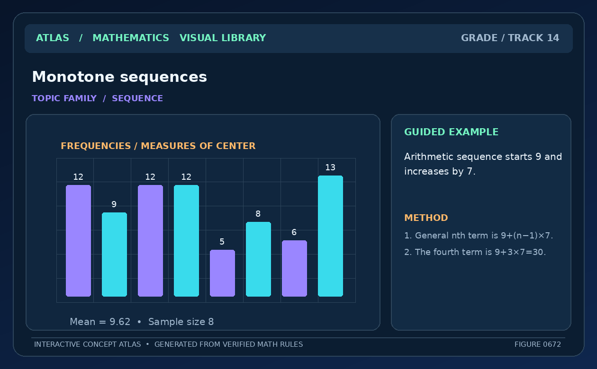
Arithmetic sequence starts 9 and increases by 7.
- General nth term is 9+(n−1)×7.
- The fourth term is 9+3×7=30.
Find the fifth term of start 9, step 7.
Hint: The fifth term has four increments.
Show answer and verify
37
Check the units, inputs and intermediate steps. Different solution methods may be valid.
Bounded sequences
Bounded sequences: Express the nth term through a pattern or recurrence, then verify initial terms. An arithmetic sequence adds a constant difference at each step.
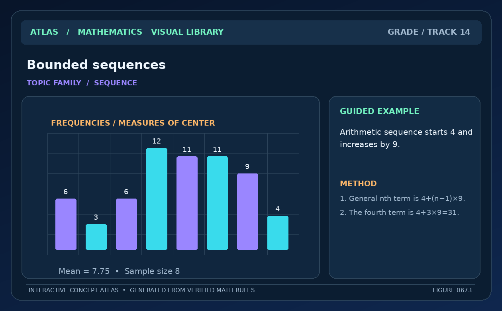
Arithmetic sequence starts 4 and increases by 9.
- General nth term is 4+(n−1)×9.
- The fourth term is 4+3×9=31.
Find the fifth term of start 4, step 9.
Hint: The fifth term has four increments.
Show answer and verify
40
Check the units, inputs and intermediate steps. Different solution methods may be valid.
Finite sums and sigma notation
Finite sums and sigma notation: Express the nth term through a pattern or recurrence, then verify initial terms. An arithmetic sequence adds a constant difference at each step.
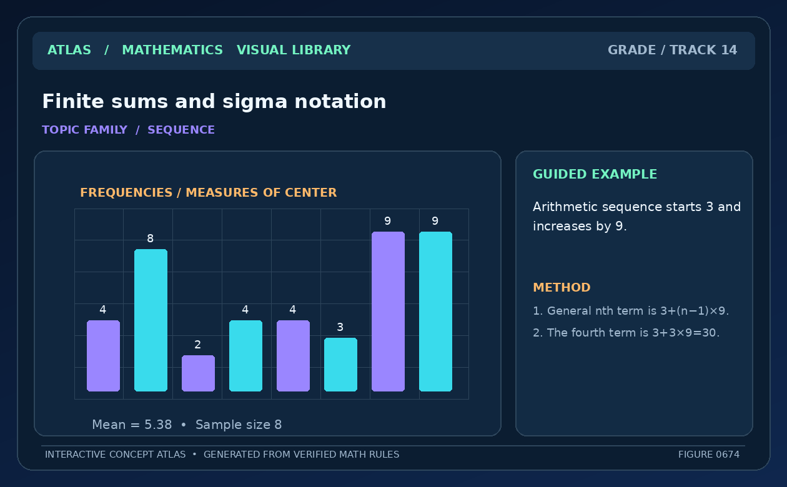
Arithmetic sequence starts 3 and increases by 9.
- General nth term is 3+(n−1)×9.
- The fourth term is 3+3×9=30.
Find the fifth term of start 3, step 9.
Hint: The fifth term has four increments.
Show answer and verify
39
Check the units, inputs and intermediate steps. Different solution methods may be valid.
Recursive sequences and fixed points
Recursive sequences and fixed points: Express the nth term through a pattern or recurrence, then verify initial terms. An arithmetic sequence adds a constant difference at each step.
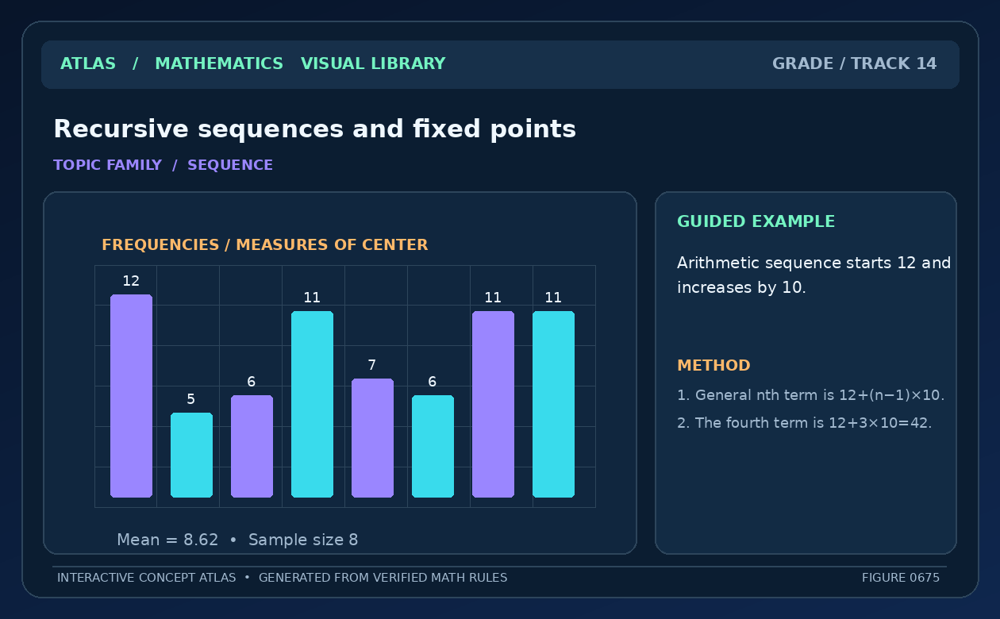
Arithmetic sequence starts 12 and increases by 10.
- General nth term is 12+(n−1)×10.
- The fourth term is 12+3×10=42.
Find the fifth term of start 12, step 10.
Hint: The fifth term has four increments.
Show answer and verify
52
Check the units, inputs and intermediate steps. Different solution methods may be valid.
Convergence and divergence of series
Convergence and divergence of series: Test whether partial sums approach a finite value; different tests have different hypotheses. The nth-term test can show divergence but cannot establish convergence.
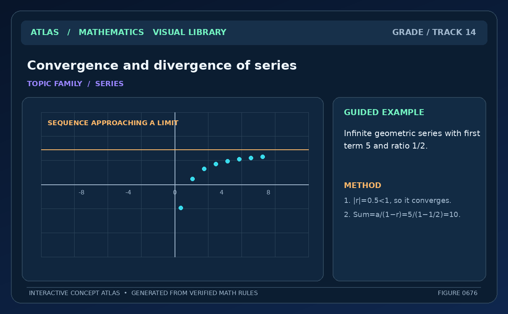
Infinite geometric series with first term 5 and ratio 1/2.
- |r|=0.5<1, so it converges.
- Sum=a/(1−r)=5/(1−1/2)=10.
Sum infinite series with first term 9, ratio 1/2.
Hint: Infinite geometric sum a/(1−r), only for |r|<1.
Show answer and verify
18
Check the units, inputs and intermediate steps. Different solution methods may be valid.
Geometric infinite series
Geometric infinite series: Test whether partial sums approach a finite value; different tests have different hypotheses. The nth-term test can show divergence but cannot establish convergence.
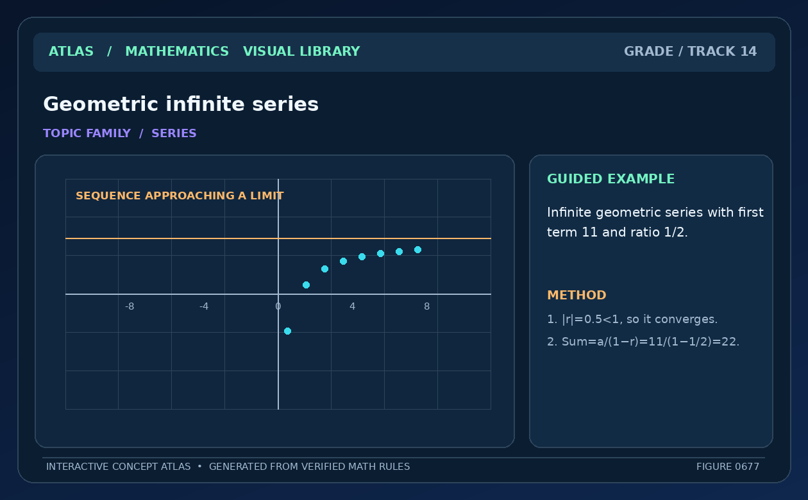
Infinite geometric series with first term 11 and ratio 1/2.
- |r|=0.5<1, so it converges.
- Sum=a/(1−r)=11/(1−1/2)=22.
Sum infinite series with first term 11, ratio 1/2.
Hint: Infinite geometric sum a/(1−r), only for |r|<1.
Show answer and verify
22
Check the units, inputs and intermediate steps. Different solution methods may be valid.
Telescoping series
Telescoping series: Test whether partial sums approach a finite value; different tests have different hypotheses. The nth-term test can show divergence but cannot establish convergence.
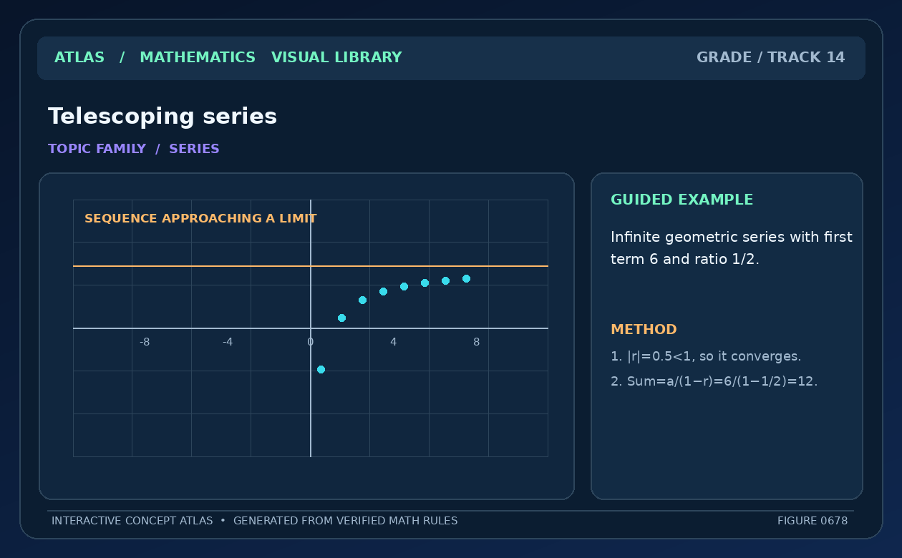
Infinite geometric series with first term 6 and ratio 1/2.
- |r|=0.5<1, so it converges.
- Sum=a/(1−r)=6/(1−1/2)=12.
Sum infinite series with first term 5, ratio 1/2.
Hint: Infinite geometric sum a/(1−r), only for |r|<1.
Show answer and verify
10
Check the units, inputs and intermediate steps. Different solution methods may be valid.
Integral test
Integral test: Test whether partial sums approach a finite value; different tests have different hypotheses. The nth-term test can show divergence but cannot establish convergence.
Infinite geometric series with first term 10 and ratio 1/2.
- |r|=0.5<1, so it converges.
- Sum=a/(1−r)=10/(1−1/2)=20.
Sum infinite series with first term 5, ratio 1/2.
Hint: Infinite geometric sum a/(1−r), only for |r|<1.
Show answer and verify
10
Check the units, inputs and intermediate steps. Different solution methods may be valid.
P-series test
P-series test: Test whether partial sums approach a finite value; different tests have different hypotheses. The nth-term test can show divergence but cannot establish convergence.
Infinite geometric series with first term 7 and ratio 1/2.
- |r|=0.5<1, so it converges.
- Sum=a/(1−r)=7/(1−1/2)=14.
Sum infinite series with first term 4, ratio 1/2.
Hint: Infinite geometric sum a/(1−r), only for |r|<1.
Show answer and verify
8
Check the units, inputs and intermediate steps. Different solution methods may be valid.
Comparison test
Comparison test: Test whether partial sums approach a finite value; different tests have different hypotheses. The nth-term test can show divergence but cannot establish convergence.
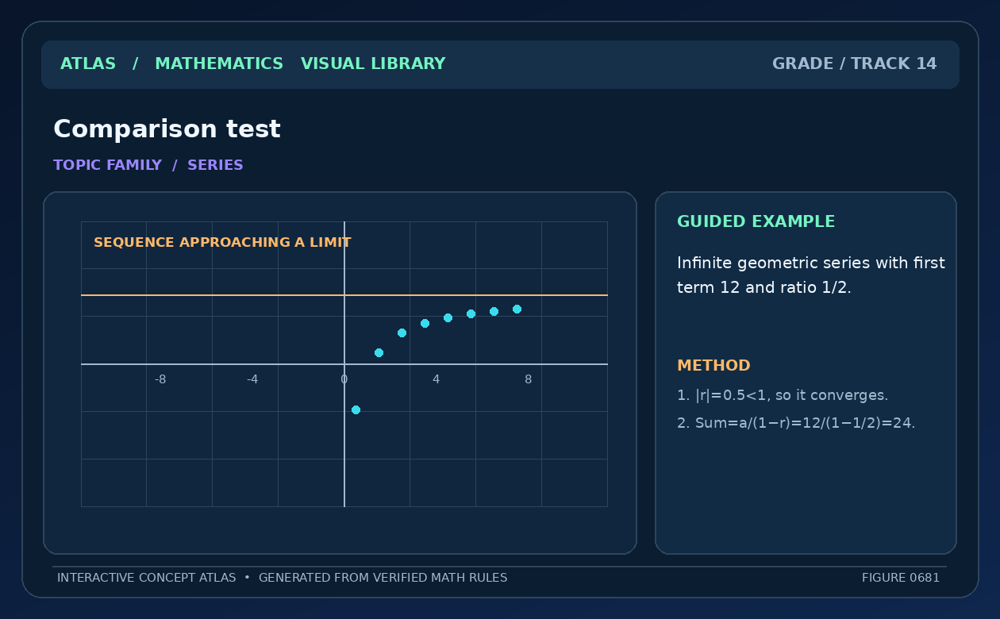
Infinite geometric series with first term 12 and ratio 1/2.
- |r|=0.5<1, so it converges.
- Sum=a/(1−r)=12/(1−1/2)=24.
Sum infinite series with first term 10, ratio 1/2.
Hint: Infinite geometric sum a/(1−r), only for |r|<1.
Show answer and verify
20
Check the units, inputs and intermediate steps. Different solution methods may be valid.
Limit comparison test
Limit comparison test: Test whether partial sums approach a finite value; different tests have different hypotheses. The nth-term test can show divergence but cannot establish convergence.
Infinite geometric series with first term 8 and ratio 1/2.
- |r|=0.5<1, so it converges.
- Sum=a/(1−r)=8/(1−1/2)=16.
Sum infinite series with first term 10, ratio 1/2.
Hint: Infinite geometric sum a/(1−r), only for |r|<1.
Show answer and verify
20
Check the units, inputs and intermediate steps. Different solution methods may be valid.
Alternating series test
Alternating series test: Test whether partial sums approach a finite value; different tests have different hypotheses. The nth-term test can show divergence but cannot establish convergence.
Infinite geometric series with first term 11 and ratio 1/2.
- |r|=0.5<1, so it converges.
- Sum=a/(1−r)=11/(1−1/2)=22.
Sum infinite series with first term 7, ratio 1/2.
Hint: Infinite geometric sum a/(1−r), only for |r|<1.
Show answer and verify
14
Check the units, inputs and intermediate steps. Different solution methods may be valid.
Absolute and conditional convergence
Absolute and conditional convergence: Test whether partial sums approach a finite value; different tests have different hypotheses. The nth-term test can show divergence but cannot establish convergence.
Infinite geometric series with first term 3 and ratio 1/2.
- |r|=0.5<1, so it converges.
- Sum=a/(1−r)=3/(1−1/2)=6.
Sum infinite series with first term 2, ratio 1/2.
Hint: Infinite geometric sum a/(1−r), only for |r|<1.
Show answer and verify
4
Check the units, inputs and intermediate steps. Different solution methods may be valid.
Ratio test
Ratio test: Test whether partial sums approach a finite value; different tests have different hypotheses. The nth-term test can show divergence but cannot establish convergence.
Infinite geometric series with first term 10 and ratio 1/2.
- |r|=0.5<1, so it converges.
- Sum=a/(1−r)=10/(1−1/2)=20.
Sum infinite series with first term 9, ratio 1/2.
Hint: Infinite geometric sum a/(1−r), only for |r|<1.
Show answer and verify
18
Check the units, inputs and intermediate steps. Different solution methods may be valid.
Root test
Root test: Test whether partial sums approach a finite value; different tests have different hypotheses. The nth-term test can show divergence but cannot establish convergence.
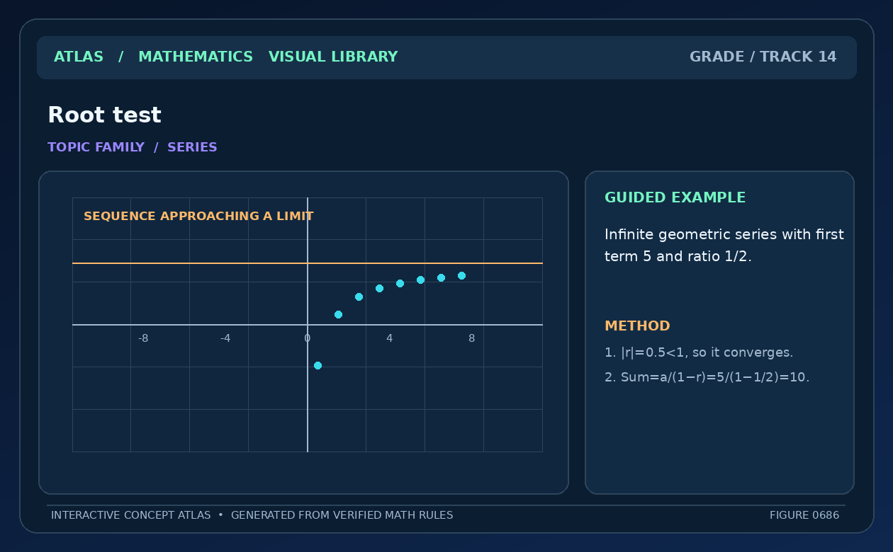
Infinite geometric series with first term 5 and ratio 1/2.
- |r|=0.5<1, so it converges.
- Sum=a/(1−r)=5/(1−1/2)=10.
Sum infinite series with first term 6, ratio 1/2.
Hint: Infinite geometric sum a/(1−r), only for |r|<1.
Show answer and verify
12
Check the units, inputs and intermediate steps. Different solution methods may be valid.
Series test selection
Series test selection: Test whether partial sums approach a finite value; different tests have different hypotheses. The nth-term test can show divergence but cannot establish convergence.
Infinite geometric series with first term 3 and ratio 1/2.
- |r|=0.5<1, so it converges.
- Sum=a/(1−r)=3/(1−1/2)=6.
Sum infinite series with first term 9, ratio 1/2.
Hint: Infinite geometric sum a/(1−r), only for |r|<1.
Show answer and verify
18
Check the units, inputs and intermediate steps. Different solution methods may be valid.
Power series
Power series: Test whether partial sums approach a finite value; different tests have different hypotheses. The nth-term test can show divergence but cannot establish convergence.
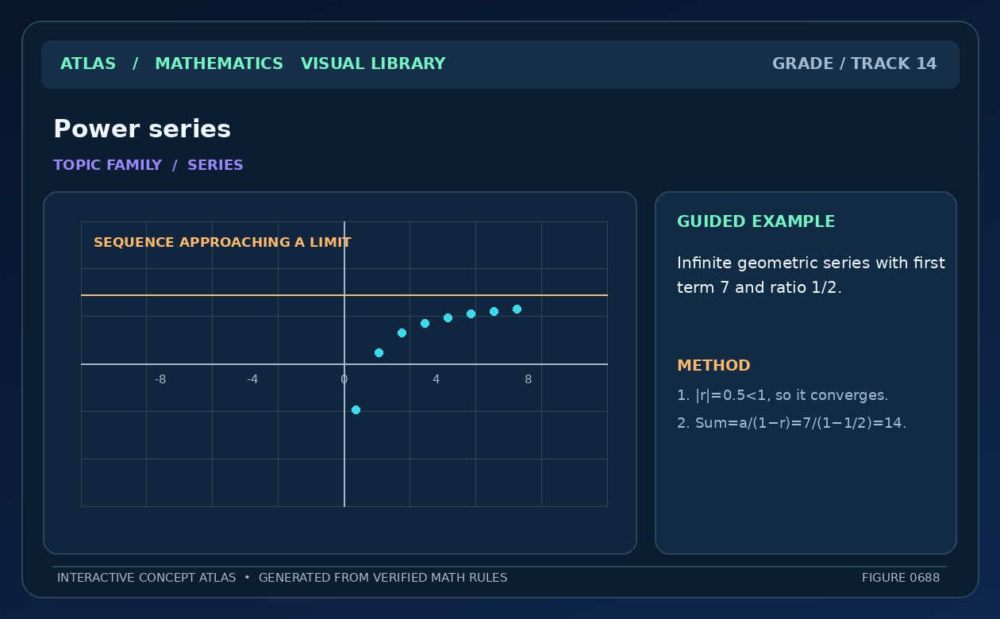
Infinite geometric series with first term 7 and ratio 1/2.
- |r|=0.5<1, so it converges.
- Sum=a/(1−r)=7/(1−1/2)=14.
Sum infinite series with first term 5, ratio 1/2.
Hint: Infinite geometric sum a/(1−r), only for |r|<1.
Show answer and verify
10
Check the units, inputs and intermediate steps. Different solution methods may be valid.
Radius of convergence
Radius of convergence: Test whether partial sums approach a finite value; different tests have different hypotheses. The nth-term test can show divergence but cannot establish convergence.
Infinite geometric series with first term 10 and ratio 1/2.
- |r|=0.5<1, so it converges.
- Sum=a/(1−r)=10/(1−1/2)=20.
Sum infinite series with first term 9, ratio 1/2.
Hint: Infinite geometric sum a/(1−r), only for |r|<1.
Show answer and verify
18
Check the units, inputs and intermediate steps. Different solution methods may be valid.
Interval of convergence
Interval of convergence: Test whether partial sums approach a finite value; different tests have different hypotheses. The nth-term test can show divergence but cannot establish convergence.
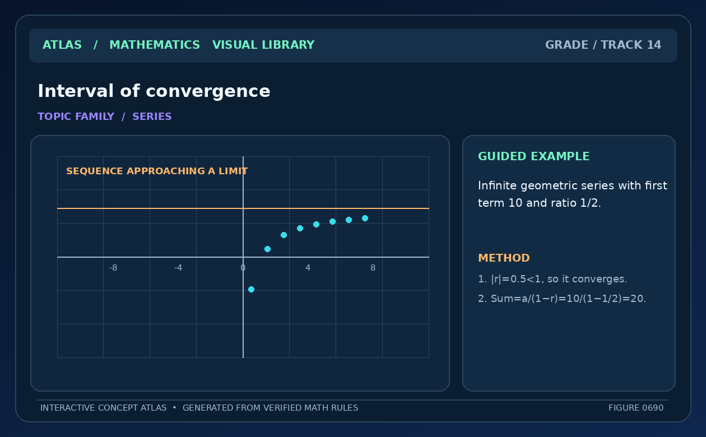
Infinite geometric series with first term 10 and ratio 1/2.
- |r|=0.5<1, so it converges.
- Sum=a/(1−r)=10/(1−1/2)=20.
Sum infinite series with first term 10, ratio 1/2.
Hint: Infinite geometric sum a/(1−r), only for |r|<1.
Show answer and verify
20
Check the units, inputs and intermediate steps. Different solution methods may be valid.
Taylor series
Taylor series: Test whether partial sums approach a finite value; different tests have different hypotheses. The nth-term test can show divergence but cannot establish convergence.
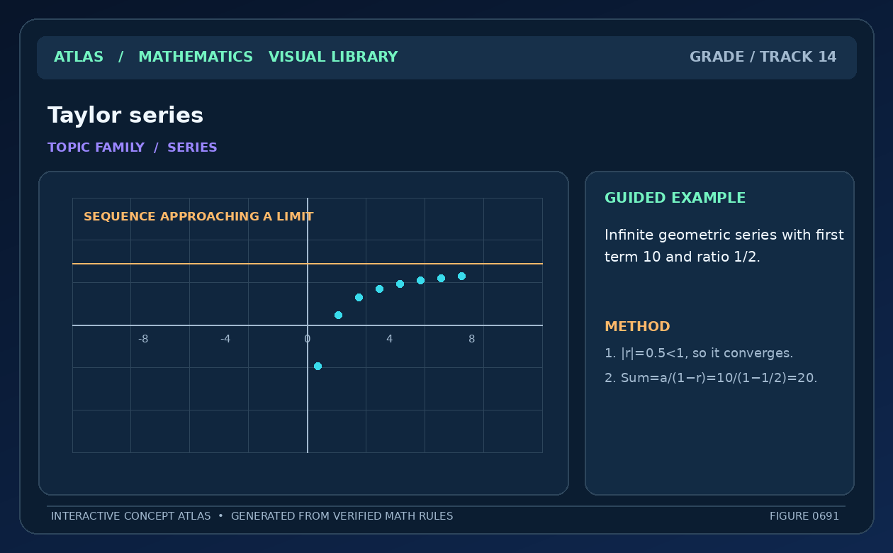
Infinite geometric series with first term 10 and ratio 1/2.
- |r|=0.5<1, so it converges.
- Sum=a/(1−r)=10/(1−1/2)=20.
Sum infinite series with first term 4, ratio 1/2.
Hint: Infinite geometric sum a/(1−r), only for |r|<1.
Show answer and verify
8
Check the units, inputs and intermediate steps. Different solution methods may be valid.
Maclaurin series
Maclaurin series: Test whether partial sums approach a finite value; different tests have different hypotheses. The nth-term test can show divergence but cannot establish convergence.
Infinite geometric series with first term 12 and ratio 1/2.
- |r|=0.5<1, so it converges.
- Sum=a/(1−r)=12/(1−1/2)=24.
Sum infinite series with first term 9, ratio 1/2.
Hint: Infinite geometric sum a/(1−r), only for |r|<1.
Show answer and verify
18
Check the units, inputs and intermediate steps. Different solution methods may be valid.
Taylor remainder bounds
Taylor remainder bounds: Test whether partial sums approach a finite value; different tests have different hypotheses. The nth-term test can show divergence but cannot establish convergence.
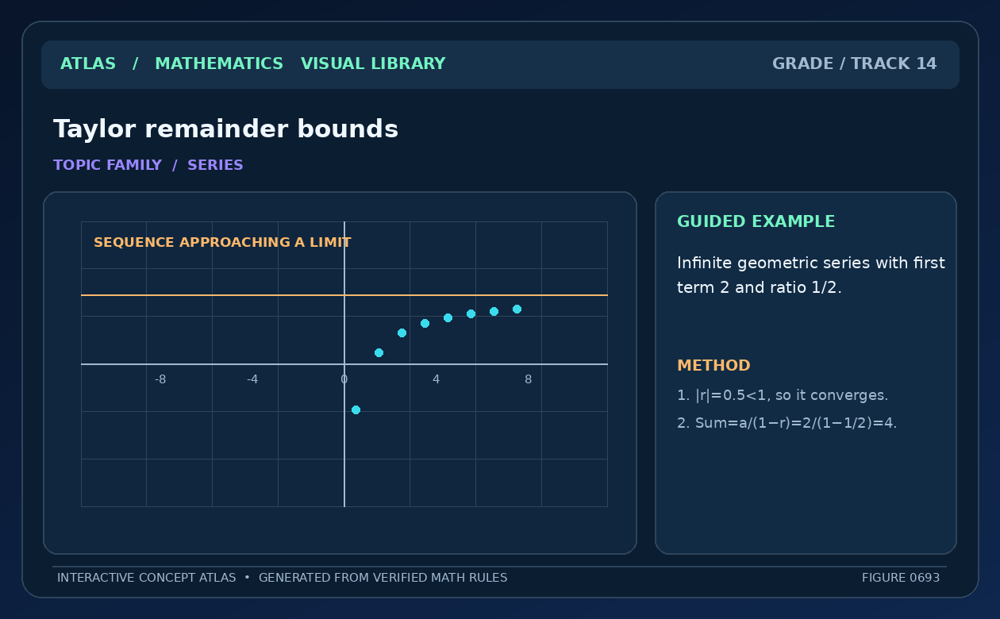
Infinite geometric series with first term 2 and ratio 1/2.
- |r|=0.5<1, so it converges.
- Sum=a/(1−r)=2/(1−1/2)=4.
Sum infinite series with first term 11, ratio 1/2.
Hint: Infinite geometric sum a/(1−r), only for |r|<1.
Show answer and verify
22
Check the units, inputs and intermediate steps. Different solution methods may be valid.
Binomial series
Binomial series: Test whether partial sums approach a finite value; different tests have different hypotheses. The nth-term test can show divergence but cannot establish convergence.
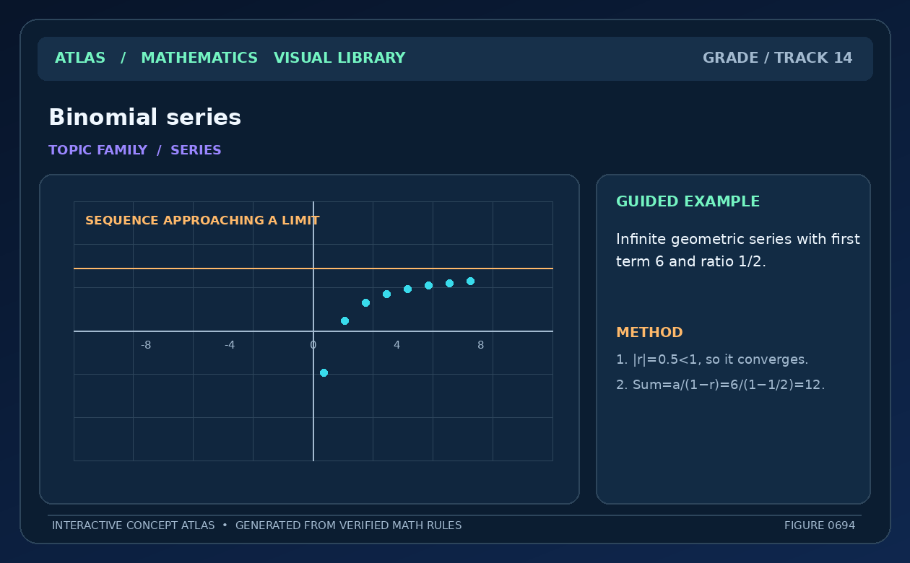
Infinite geometric series with first term 6 and ratio 1/2.
- |r|=0.5<1, so it converges.
- Sum=a/(1−r)=6/(1−1/2)=12.
Sum infinite series with first term 11, ratio 1/2.
Hint: Infinite geometric sum a/(1−r), only for |r|<1.
Show answer and verify
22
Check the units, inputs and intermediate steps. Different solution methods may be valid.
Differentiating power series
Differentiating power series: Test whether partial sums approach a finite value; different tests have different hypotheses. The nth-term test can show divergence but cannot establish convergence.
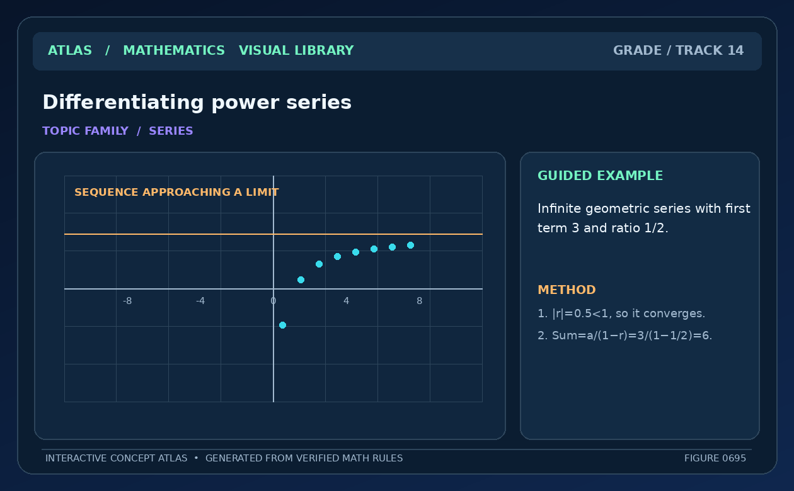
Infinite geometric series with first term 3 and ratio 1/2.
- |r|=0.5<1, so it converges.
- Sum=a/(1−r)=3/(1−1/2)=6.
Sum infinite series with first term 8, ratio 1/2.
Hint: Infinite geometric sum a/(1−r), only for |r|<1.
Show answer and verify
16
Check the units, inputs and intermediate steps. Different solution methods may be valid.
Integrating power series
Integrating power series: Test whether partial sums approach a finite value; different tests have different hypotheses. The nth-term test can show divergence but cannot establish convergence.
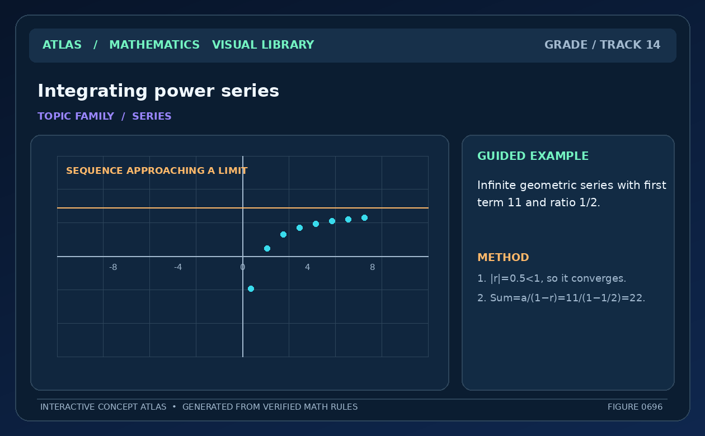
Infinite geometric series with first term 11 and ratio 1/2.
- |r|=0.5<1, so it converges.
- Sum=a/(1−r)=11/(1−1/2)=22.
Sum infinite series with first term 4, ratio 1/2.
Hint: Infinite geometric sum a/(1−r), only for |r|<1.
Show answer and verify
8
Check the units, inputs and intermediate steps. Different solution methods may be valid.
Series solutions near a point
Series solutions near a point: Test whether partial sums approach a finite value; different tests have different hypotheses. The nth-term test can show divergence but cannot establish convergence.
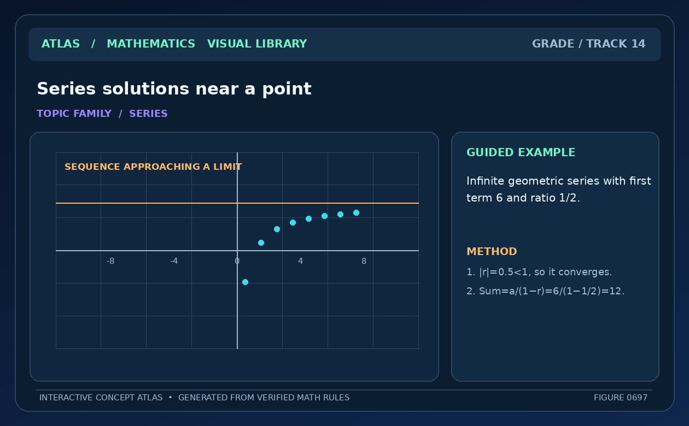
Infinite geometric series with first term 6 and ratio 1/2.
- |r|=0.5<1, so it converges.
- Sum=a/(1−r)=6/(1−1/2)=12.
Sum infinite series with first term 5, ratio 1/2.
Hint: Infinite geometric sum a/(1−r), only for |r|<1.
Show answer and verify
10
Check the units, inputs and intermediate steps. Different solution methods may be valid.
Parametric curve plotting
Parametric curve plotting: Treat x and y as functions of a parameter; use dy/dx=(dy/dt)/(dx/dt) where valid. The same geometric curve can be traced at different speeds.
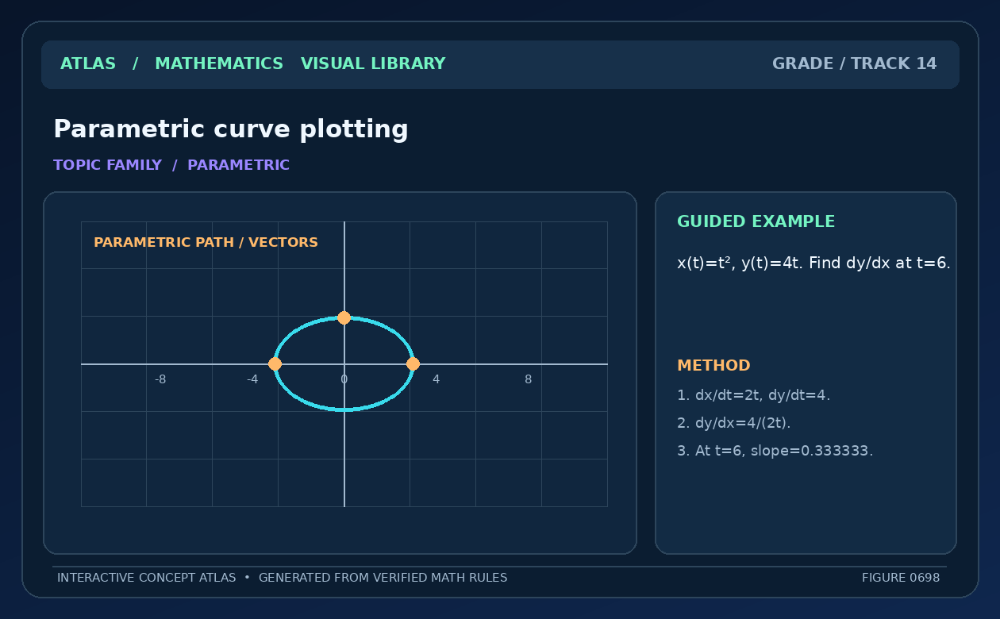
x(t)=t², y(t)=4t. Find dy/dx at t=6.
- dx/dt=2t, dy/dt=4.
- dy/dx=4/(2t).
- At t=6, slope=0.333333.
For x=t², y=6t, find dy/dx at t=6.
Hint: Divide dy/dt by dx/dt.
Show answer and verify
0.5
Check the units, inputs and intermediate steps. Different solution methods may be valid.
Eliminating a parameter
Eliminating a parameter: Treat x and y as functions of a parameter; use dy/dx=(dy/dt)/(dx/dt) where valid. The same geometric curve can be traced at different speeds.
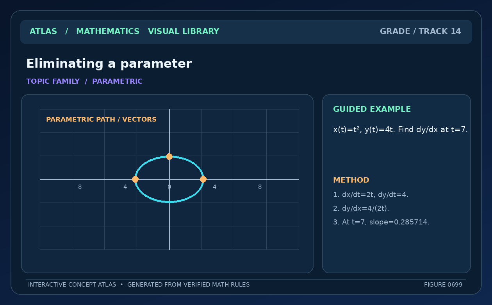
x(t)=t², y(t)=4t. Find dy/dx at t=7.
- dx/dt=2t, dy/dt=4.
- dy/dx=4/(2t).
- At t=7, slope=0.285714.
For x=t², y=10t, find dy/dx at t=7.
Hint: Divide dy/dt by dx/dt.
Show answer and verify
0.7142857142857143
Check the units, inputs and intermediate steps. Different solution methods may be valid.
Parametric derivatives
Parametric derivatives: Treat x and y as functions of a parameter; use dy/dx=(dy/dt)/(dx/dt) where valid. The same geometric curve can be traced at different speeds.
x(t)=t², y(t)=9t. Find dy/dx at t=7.
- dx/dt=2t, dy/dt=9.
- dy/dx=9/(2t).
- At t=7, slope=0.642857.
For x=t², y=8t, find dy/dx at t=7.
Hint: Divide dy/dt by dx/dt.
Show answer and verify
0.5714285714285714
Check the units, inputs and intermediate steps. Different solution methods may be valid.
Parametric second derivatives
Parametric second derivatives: Treat x and y as functions of a parameter; use dy/dx=(dy/dt)/(dx/dt) where valid. The same geometric curve can be traced at different speeds.
x(t)=t², y(t)=6t. Find dy/dx at t=7.
- dx/dt=2t, dy/dt=6.
- dy/dx=6/(2t).
- At t=7, slope=0.428571.
For x=t², y=4t, find dy/dx at t=7.
Hint: Divide dy/dt by dx/dt.
Show answer and verify
0.2857142857142857
Check the units, inputs and intermediate steps. Different solution methods may be valid.
Tangents to parametric curves
Tangents to parametric curves: Treat x and y as functions of a parameter; use dy/dx=(dy/dt)/(dx/dt) where valid. The same geometric curve can be traced at different speeds.
x(t)=t², y(t)=4t. Find dy/dx at t=1.
- dx/dt=2t, dy/dt=4.
- dy/dx=4/(2t).
- At t=1, slope=2.000000.
For x=t², y=6t, find dy/dx at t=1.
Hint: Divide dy/dt by dx/dt.
Show answer and verify
3.0
Check the units, inputs and intermediate steps. Different solution methods may be valid.
Areas with parametric curves
Areas with parametric curves: Treat x and y as functions of a parameter; use dy/dx=(dy/dt)/(dx/dt) where valid. The same geometric curve can be traced at different speeds.
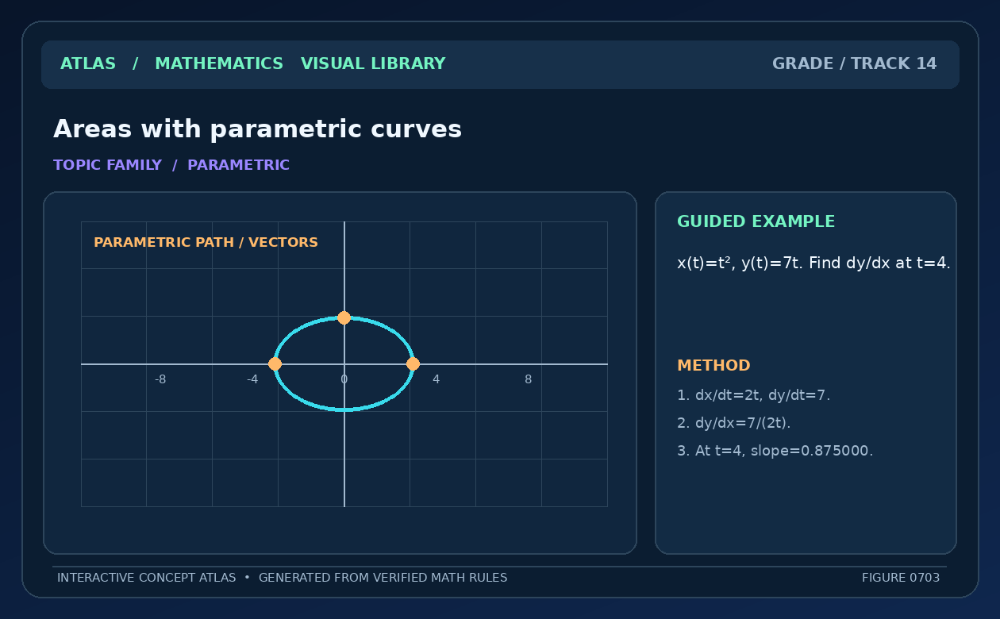
x(t)=t², y(t)=7t. Find dy/dx at t=4.
- dx/dt=2t, dy/dt=7.
- dy/dx=7/(2t).
- At t=4, slope=0.875000.
For x=t², y=4t, find dy/dx at t=4.
Hint: Divide dy/dt by dx/dt.
Show answer and verify
0.5
Check the units, inputs and intermediate steps. Different solution methods may be valid.
Polar coordinates and curves
Polar coordinates and curves: Represent a point with radius r and angle θ measured from the polar axis. Convert using x=r cosθ and y=r sinθ.
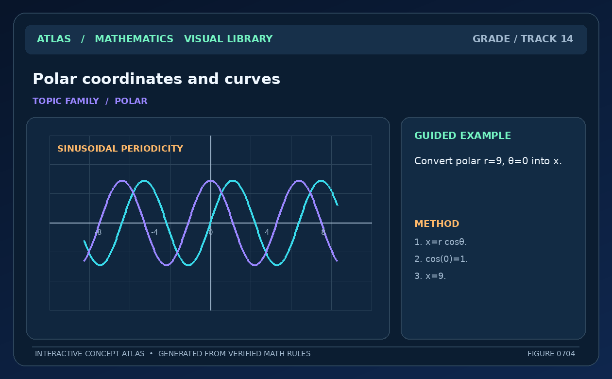
Convert polar r=9, θ=0 into x.
- x=r cosθ.
- cos(0)=1.
- x=9.
For polar r=10, θ=π/2, what is the y-coordinate?
Hint: y=r sinθ.
Show answer and verify
10
Check the units, inputs and intermediate steps. Different solution methods may be valid.
Polar symmetry
Polar symmetry: Represent a point with radius r and angle θ measured from the polar axis. Convert using x=r cosθ and y=r sinθ.
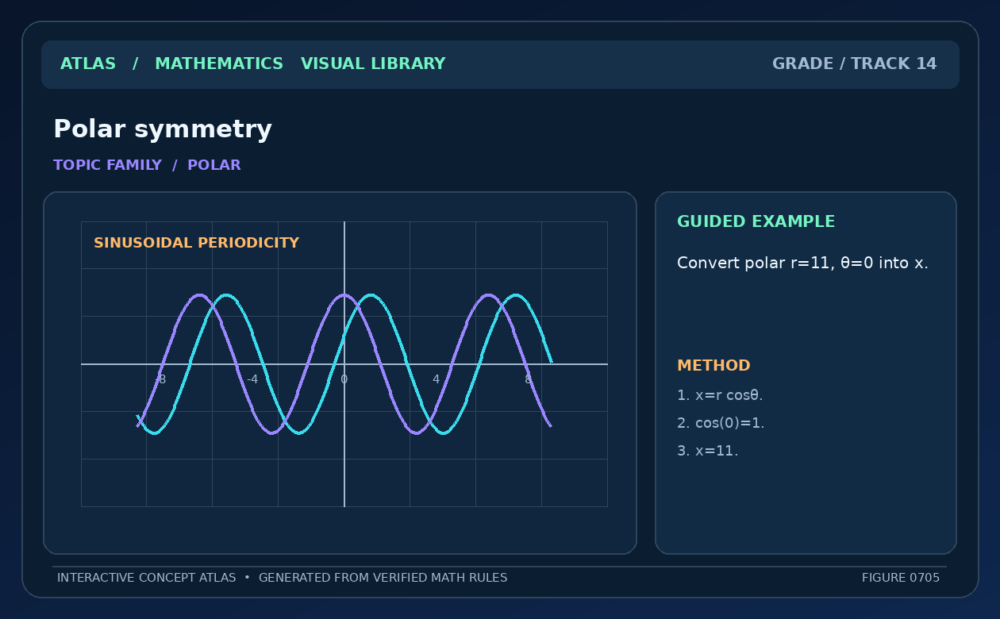
Convert polar r=11, θ=0 into x.
- x=r cosθ.
- cos(0)=1.
- x=11.
For polar r=8, θ=π/2, what is the y-coordinate?
Hint: y=r sinθ.
Show answer and verify
8
Check the units, inputs and intermediate steps. Different solution methods may be valid.
Polar tangent slopes
Polar tangent slopes: Represent a point with radius r and angle θ measured from the polar axis. Convert using x=r cosθ and y=r sinθ.
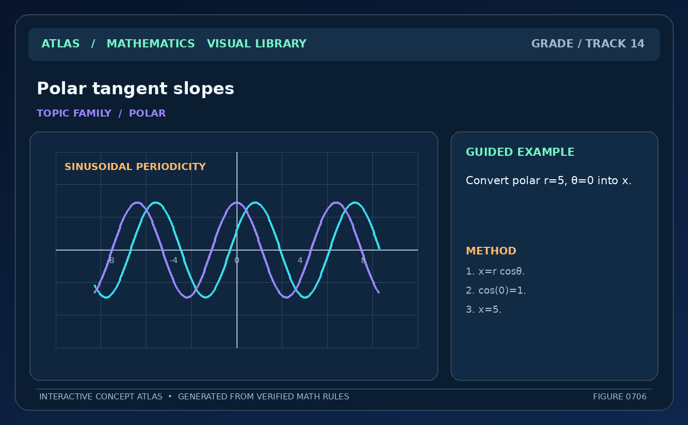
Convert polar r=5, θ=0 into x.
- x=r cosθ.
- cos(0)=1.
- x=5.
For polar r=10, θ=π/2, what is the y-coordinate?
Hint: y=r sinθ.
Show answer and verify
10
Check the units, inputs and intermediate steps. Different solution methods may be valid.
Polar enclosed area
Polar enclosed area: Represent a point with radius r and angle θ measured from the polar axis. Convert using x=r cosθ and y=r sinθ.
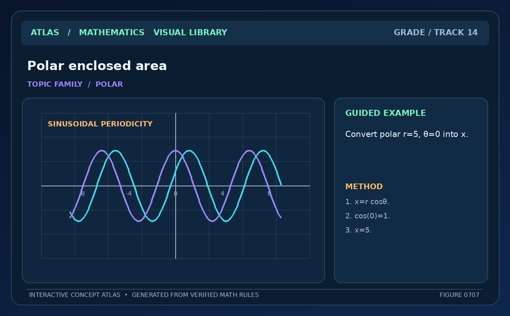
Convert polar r=5, θ=0 into x.
- x=r cosθ.
- cos(0)=1.
- x=5.
For polar r=4, θ=π/2, what is the y-coordinate?
Hint: y=r sinθ.
Show answer and verify
4
Check the units, inputs and intermediate steps. Different solution methods may be valid.
Polar region intersection areas
Polar region intersection areas: Represent a point with radius r and angle θ measured from the polar axis. Convert using x=r cosθ and y=r sinθ.
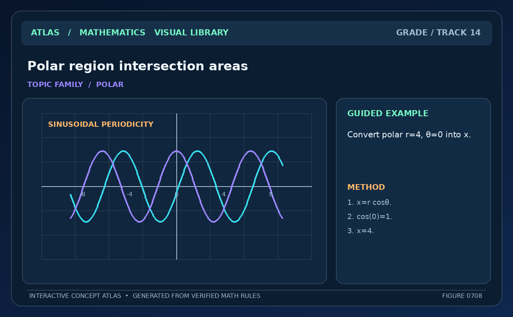
Convert polar r=4, θ=0 into x.
- x=r cosθ.
- cos(0)=1.
- x=4.
For polar r=11, θ=π/2, what is the y-coordinate?
Hint: y=r sinθ.
Show answer and verify
11
Check the units, inputs and intermediate steps. Different solution methods may be valid.
Polar arc length
Polar arc length: Represent a point with radius r and angle θ measured from the polar axis. Convert using x=r cosθ and y=r sinθ.
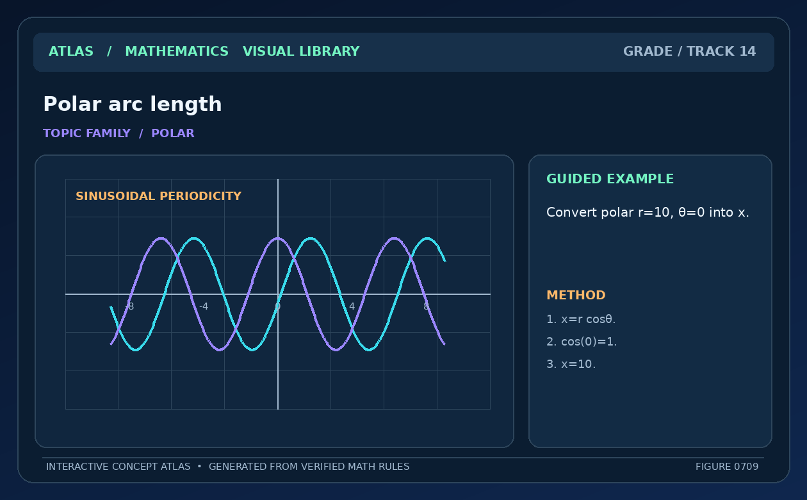
Convert polar r=10, θ=0 into x.
- x=r cosθ.
- cos(0)=1.
- x=10.
For polar r=5, θ=π/2, what is the y-coordinate?
Hint: y=r sinθ.
Show answer and verify
5
Check the units, inputs and intermediate steps. Different solution methods may be valid.
Separable differential equations
Separable differential equations: Relate a derivative to an unknown function and choose an appropriate solution method. A differential equation requires initial conditions for a unique solution in many cases.
Solve dy/dt=2y with initial value y(0)=2.
- Separation gives ln|y|=2t+C.
- The initial condition sets scale 2.
- y(t)=2e^(2t).
If dy/dt=4y, what is y′(0) for y(0)=2?
Hint: Use the differential equation at time zero.
Show answer and verify
8
Check the units, inputs and intermediate steps. Different solution methods may be valid.
Exponential decay differential equations
Exponential decay differential equations: Relate a derivative to an unknown function and choose an appropriate solution method. A differential equation requires initial conditions for a unique solution in many cases.
Solve dy/dt=5y with initial value y(0)=3.
- Separation gives ln|y|=5t+C.
- The initial condition sets scale 3.
- y(t)=3e^(5t).
If dy/dt=3y, what is y′(0) for y(0)=3?
Hint: Use the differential equation at time zero.
Show answer and verify
9
Check the units, inputs and intermediate steps. Different solution methods may be valid.
Logistic differential equations
Logistic differential equations: Relate a derivative to an unknown function and choose an appropriate solution method. A differential equation requires initial conditions for a unique solution in many cases.
Solve dy/dt=6y with initial value y(0)=8.
- Separation gives ln|y|=6t+C.
- The initial condition sets scale 8.
- y(t)=8e^(6t).
If dy/dt=6y, what is y′(0) for y(0)=8?
Hint: Use the differential equation at time zero.
Show answer and verify
48
Check the units, inputs and intermediate steps. Different solution methods may be valid.
Slope fields introduction
Slope fields introduction: Relate a derivative to an unknown function and choose an appropriate solution method. A differential equation requires initial conditions for a unique solution in many cases.
Solve dy/dt=6y with initial value y(0)=2.
- Separation gives ln|y|=6t+C.
- The initial condition sets scale 2.
- y(t)=2e^(6t).
If dy/dt=2y, what is y′(0) for y(0)=2?
Hint: Use the differential equation at time zero.
Show answer and verify
4
Check the units, inputs and intermediate steps. Different solution methods may be valid.
Present value as integration
Present value as integration: Convert a percentage to a decimal and write down the compounding period before computing. A loan APR and an investment APY are not automatically interchangeable.
Calculate one year of simple interest on $800 at 6% APR.
- Convert rate to 0.06.
- Interest = 800×0.06×1.
- Earn $48.00.
Interest on $700 at 6% for one year?
Hint: Simple interest is principal × annual rate × time.
Show answer and verify
42
Check the units, inputs and intermediate steps. Different solution methods may be valid.
Continuous cash flow models
Continuous cash flow models: Convert a percentage to a decimal and write down the compounding period before computing. A loan APR and an investment APY are not automatically interchangeable.
Calculate one year of simple interest on $500 at 5% APR.
- Convert rate to 0.05.
- Interest = 500×0.05×1.
- Earn $25.00.
Interest on $1100 at 5% for one year?
Hint: Simple interest is principal × annual rate × time.
Show answer and verify
55
Check the units, inputs and intermediate steps. Different solution methods may be valid.
Savings and annuity calculations
Savings and annuity calculations: Convert a percentage to a decimal and write down the compounding period before computing. A loan APR and an investment APY are not automatically interchangeable.
Calculate one year of simple interest on $500 at 5% APR.
- Convert rate to 0.05.
- Interest = 500×0.05×1.
- Earn $25.00.
Interest on $300 at 5% for one year?
Hint: Simple interest is principal × annual rate × time.
Show answer and verify
15
Check the units, inputs and intermediate steps. Different solution methods may be valid.